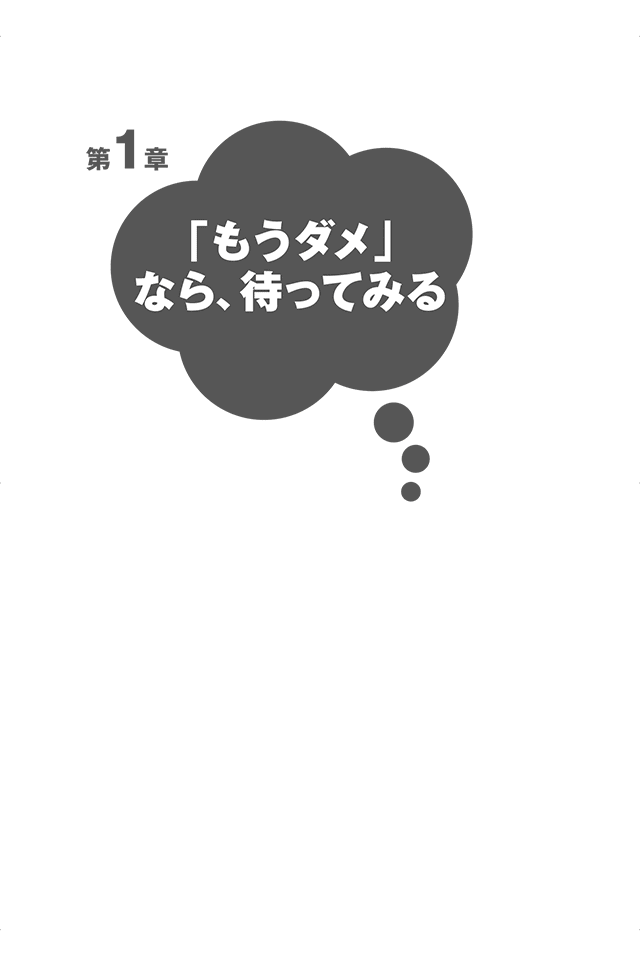
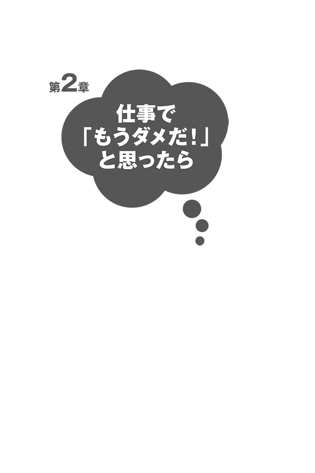
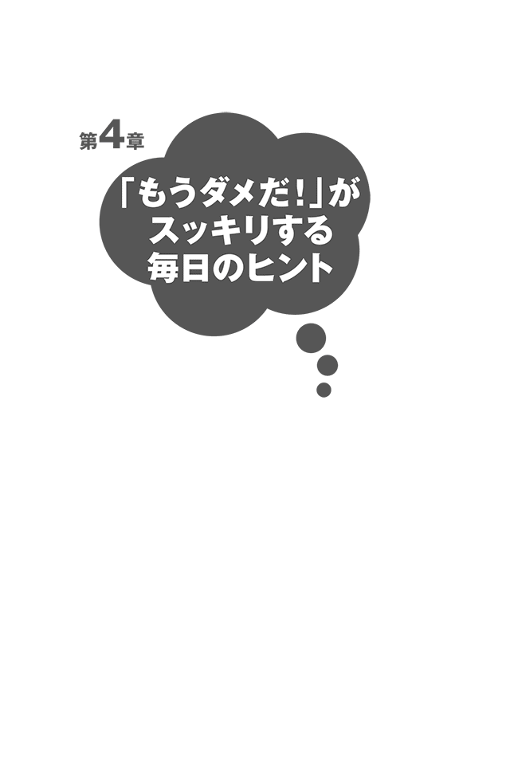
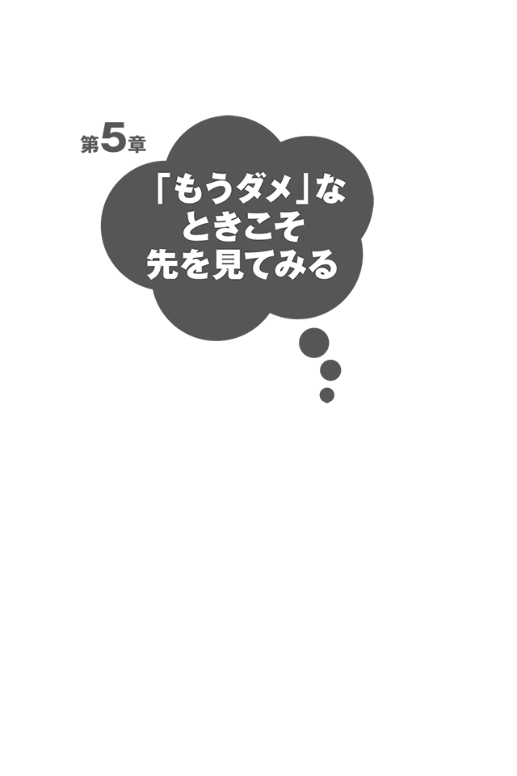
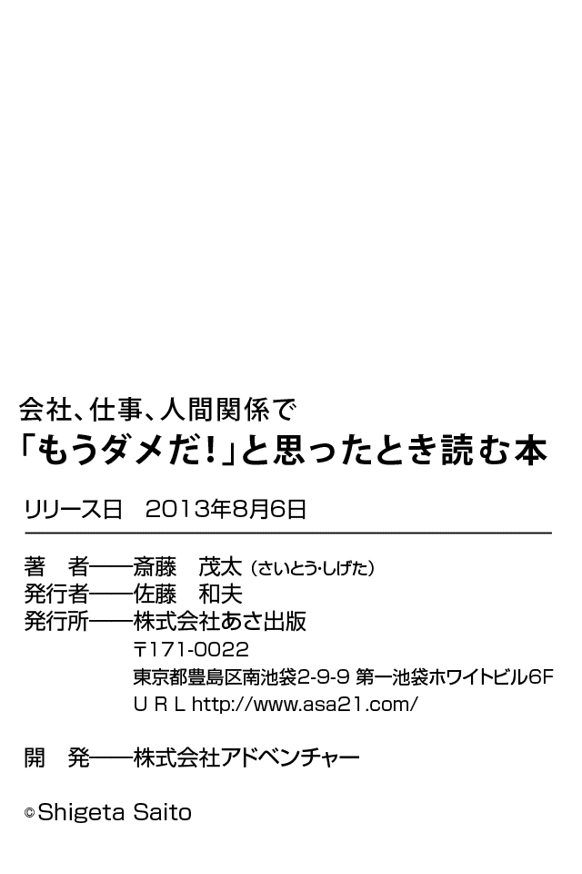

| 「もうダメだ！」と思ったとき読む本(あさ出版電子書籍) | |
| 斎藤茂太 | |
| (2006) | |
はじめに
「もうダメだ！」と思ったあなたへ
人はどのようなとき「もうダメだ」と思うのだろうか。
仕事についていけない。頑張っても結果が出ない。人間関係がうまくいかない等々。
多くの人は、物事が行き詰まると「もうダメだ」と感じ、それ以上先に進むのをあきらめるようだ。
誰でも「もうダメだ」と思った経験を持っている。もちろん私自身も例外ではない。
つらいとき、行き詰まったとき、落ち込んであきらめたり、投げ出したりすることが悪いとは思わない。
いつまでも同じ場所で堂々巡りを続けて苦しむより、見切りをつけて事態が好転するならそのほうがいい。それは賢明な選択である。
しかし、「もうダメだ」と思って、あきらめる前にやってみてほしいことがある。
それは「待つ」ということである。
「あきらめるな、頑張れ」と言うつもりは毛頭ない。
あきらめてもいい。だがその前に少し待ってみるのである。あきらめるのをちょっとだけ後回しにする。その間、頑張る必要はない。ただ待つだけである。
そうすると、待つことによって見えてくるものがある。待つことでエネルギーが蓄えられ、ゆとりも生まれる。行き詰まったと感じていた事態を好転させる芽が出てくるのである。
実は「もうダメだ」と思っても、人間そう簡単にあきらめきれない。これ以上前に進めない。けれども捨てきれない。だから苦しいのである。
八方ふさがりの感情は、自分なりになんとか実現させよう、折り合いをつけようと手を尽くしてきたからこそ抱くものだ。
あなたが「もうダメだ」という感情を抱いているのだとすれば、それはあなたの真剣さの表れである。同時にあなたが一回り大きくなれる成長の好機でもある。
だからこそ、こうアドバイスしたい。待ってみよう、と。
待つことでそれまでできなかったことができるようになったり、解決したりすることは本当に多い。
これは、私の人生経験、そして医師としての経験から確実に言えることである。
現代は何事においてもスピードが要求される。こういうときというのは、心に余裕がなくなってくるものである。ストレスもたまる一方で「ああ、もうやめたい」という気持ちにもなりやすい。
なにかとせかされる時代だからこそ、待つことが必要なのではないだろうか。急ぐ必要なんてないと思えれば、気持ちも楽になるはずである。
これから「もうダメだ」という状況に対処するさまざまなヒントを、とりわけ「待つ」ということを中心に述べていきたい。そのうちのいくつかでも読者であるあなたの心を軽くするきっかけになれば幸いである。
平成十八年四月
斎藤茂太
【目次】

時間がたてば「ダメ」でなくなる
人は、仕事においても日常生活においても、さまざまな困難に直面する。
これ以上、この会社で働けない。いくら頑張っても営業の成績が伸びない。いつまでたってもこのつらい状況から抜け出せない。もう決定的に人間関係が修復不可能になってしまった。
こうして、もはや物事を先に進められないと判断したとき、たいていの人は「もうダメだ」と感じ、無力感にさいなまれる。
しかし、何事も自分の思いどおりにいくことはまずない。困難にぶつかり、なんとかしようとあがくことで人は成長するのである。
やれるだけのことをやった結果、あなたが望むような成果を得られなかったとしても、その経験はあなたにとって後々必ずプラスに働く。
だから、「もうダメだ」と思って必要以上に苦しむことはやめにしてほしい。全力を尽くしたと心から思えるのであれば落ち込んだりせず、むしろ自分をほめるくらいの心持ちでいればいいと私は思う。
ただし、問題の解決には、ある程度の時間がかかるということは覚えておいて損はない。たとえば、誰かとけんかをして、仲直りをしたい場合、相手の気持ちが落ち着くまでには、一定の時間がかかる。その間に、謝ったり、ご機嫌をとったりしてみても、すぐには関係を修復できない。相手の気持ちが落ち着くまでは待つしかない。
仕事をする場合も同じだと思う。今日立てた企画が、明日、花開いて、利益に結びつくというようなことはまずありえないだろう。計画を立て、何年もかけて準備をして取り組んだプロジェクトが花開くのは、三年後かもしれないし、五年後かもしれない。会社の命運を左右する大きな事業ほど、結実するまで時間はかかるだろう。その間は、自分たちのできる最善のことをしながら待つしかない。
ビジネスの世界では、スピードがますます重視され、迅速な問題解決を迫られる。
そんな世界に身を置いている人たちは、周りの人が成果を上げているのを見て、成果を上げられない自分を情けなく思い、落ち込むかもしれない。
しかし、それは彼らがそれまで人知れず苦しみ待った結果、得られた成果であることも少なくない。
そもそも、時間をかけなければ解決しない問題は、世の中に山のようにある。待つことができなければ、そのような問題を解決することはできない。
仕事でも人間関係でもスピードは大切だが、同時に、待つこともまた大切である。急ぐこともできるし、じっくり待つこともできる人が、人生で本当の幸せをつかむことのできる人なのだ。
人は走り続けることはできない
行き詰まったとき待つことが大事と言っても、仕事の第一線で働いている人からすれば悠長に過ぎるかもしれない。その気持ちはよくわかる。
しかし、私は急ぐことが、仕事をはかどらせる唯一の道ではないと思うが、いかがだろうか。急げば必ず焦りが出るし、ミスも出る。
期限を守ることは確かに必要だけれども、「いい仕事」をしなければ、自分が望んでいるような評価も収入も得られないはずだ。
何よりも、急ぎすぎて、心や体を壊してしまったら、回復するために長い休養を要する。それでは、かえって時間がかかることになる。
人生にはメリハリが大切だ。走ることも必要だが、待つこともまた必要である。意識的に待つことをしないと、仕事や日常生活のスピードに流されてしまう。
私の病院を訪れる人には、「待つ」ことを忘れてしまった人が多い。膨大な仕事に追われ、心が疲れてしまった人。家事や育児に追われ、悩みを抱えた人。みな心の余裕をなくして、苦しんでいる。
私たち精神科医は、そういう人たちの話をじっくり聞きながら、待つ時間を持っていただけるよう、お手伝いしているようなものである。
仕事や日常生活で「もうダメだ」と思ったときは、少し休息をとる、待つ時間を持ってみてはいかがだろうか。それだけで、気持ちが楽になるはずである。
「もうダメだ！」と思ったら「待って」みよう
一口に「待つ」と言っても、いろいろある。
つらいことが通り過ぎるのを待つのも「待つ」ことであるし、楽しいことを待ち望むのも「待つ」である。よりよい状態にするために、少し寝かせておくことも「待つ」である。急ぎすぎたときに、少し止まってゆっくりしていることも「待つ」のうちだ。
健康を損ねてしまった人やうつ状態になってしまった人にとっては、休息をとって回復を待つのも「待つ」ことである。また、焦っている自分の気持ちを抑える、怒りの感情が出てきたときに、すぐにその感情を爆発させないで、怒りが少し収まるのを「待つ」こともあるだろう。
誰かと会話をしているときに、自分が話すのを待って、相手の話をじっくり聞くことも「待つ」の一つだ。その他にもさまざまな「待つ」のバリエーションがある。
「もうダメだ」と感じるような問題を解決するカギは、「いかにして待つか」という待ち方にあると言ってもいいと思う。
多様な形の待ち方を考えることから、人生に訪れるさまざまな問題の解決策を見つけていこう。
間をおくといろいろなものが見えてくる
八方ふさがりで、何をやってもうまくいかないときがある。そんなときに、焦ってみても、状況は変わらない。うまくいかないときには、何をやってもうまくいかないものである。あがけばあがくほど、ストレスを感じるし、自分を見失ってしまう。
たとえば、こんな経験はないだろうか。
財布が見つからない。確かにカバンの中に入れたはずなのに見つからない。カバンのどこを見ても見つからない。上着のポケットやズボンのポケットにも財布は入っていない。机の引き出しを一つずつ探してみたけど、見つからない。机の下をはいつくばって探してみたのに、それでも見つからない。
大騒ぎしていると、周りの人から「財布ならそこにありますよ」と指摘された。よく見ると、机の上の書類の陰に財布があった。
こんな具合に、いったん焦ってしまうと、目の前にあるものが見えなくなることがある。心に余裕がなくなっているときには、一生懸命考えても問題を解決できるようなアイデアは浮かんでこない。そういうときには、少し時間をおくことだ。冷静になって考えたほうが、いい案は生まれてくる。
「間をおく」ことは、非効率のように思えるが、結果的に見ると、そのほうが問題を解決するうえで近道となることが少なくないのである。
寄り道すると気持ちが切り替わる
「仕事が生きがいだ」という人は、案外多い。
こういう人は仕事が順調なときには、つらいことや悩みごとがあっても、仕事が逃げ場所になる。ところが、仕事上でつらいことや悩みごとを抱えてしまうと、仕事は逃げ場所でなくなるどころか、苦痛そのものでしかなくなる。おまけに他の逃げ場所もないから、中には、うつ状態にまでなってしまう人もいる。
このような人たちに私は、「何か趣味をお持ちなさい」とすすめている。趣味さえあればうつ状態にならないと請け合うことはできないが、万一なってしまっても、しのぎやすいのは確かである。
医者である私が文章を書くようになったのは、昭和二十八年に父が亡くなって、ある雑誌から父の葬送記を依頼されたのがきっかけだ。
書くようになって気づいたのだが、書くことは私にとってまたとない気分転換の方法だった。何かについて書こうと思うと、物事なり人間なりをいろいろな視点から掘り下げて見るようになる。また、書くという作業を行ってはじめて見えてくるものがあることを知った。
さらに思いがけなかったのは、書くときの思考が、診察など他の作業とはまるで違うということだ。おそらく文章を書くことだけでなく、絵を描いたり、碁や将棋をしたり、家事をしたりといったことも、それぞれ異なる思考でできているのだろう。それぞれの作業をするたびに、頭の働きも切り替わる。
私はもともとカメレオン人間と自称するほど趣味が多く、いつも違うことばかりしている。人生の中で、ブラブラと寄り道を繰り返しているようなものだ。
脇道に入っていくことも多いが、それがまた楽しい。そんなふうに生きているうちに、自然にスピードが落ちてきて、ゆっくりと生活ができるようになった。
さらに言えば、そのほうが、なぜか、仕事もはかどるのである。
「待つ」と言っても、大げさに考える必要はない。この程度のことでいいのだ。ちょっと立ち止まってみてブラブラすること。これが心のゆとりにつながるのである。
今は「寝かせどき」なのかもしれない
学生時代の試験と言えば、一夜漬けという思い出がある人も多いだろう。友だち同士でヤマを張り、語呂合わせで暗記したりしたものだ。しかし、こういう勉強の仕方では、試験が終わると、すべてのことを忘れてしまう。その場しのぎの勉強だからいたしかたない。
一方で、不器用で覚えが悪いようなタイプの人が、あるときを境にぐんぐんと頭角を現すことがある。それまで地道にコツコツやってきたから基礎がしっかりできていて、そのうえに新たに積み重ねられる知識もどんどん吸収していく。
人はナスやキュウリではないから、なかなか一夜漬けというわけにはいかない。
何かことを成すうえで、ある程度の時間は不可欠である。早く結果を望む気持ちはわかるが、よい結果を生むにはあまり焦らないこと、急がないことが大切だと思う。
ゆっくり時間をかければ身に付くものを「早く、早く」とせかされれば、嫌気もさすし、放り投げたくもなる。
一流のワインや日本酒がどうやってできるかご存じだろうか。芳醇な仕上がりにするために、たっぷりと時間をかけるのである。いわゆる「寝かせる」という作業である。人間もまた同様だ。
人生を焦る必要はない。周囲のスピードが気になっても、今は自分自身を寝かせている最中だ、そう思うことである。そうすれば、気持ちも楽になるし、身に付くべきものも自ずと身に付いていくのである。
怒っても事態は悪化するだけ、だから待とう
待つことが有効なのは、落ち込んだり、気が滅入ったりしたときに限らない。
職場でも日常生活でも、イライラすることや腹の立つことはたくさんあると思う。上司の指示がコロコロ変わる。同僚が働かないから、自分だけが働かされる。部下がミスばかりする。連絡したはずなのに相手は「聞いていない」と言う。
そんなことが繰り返されると、イライラが高じて、強い怒りがこみ上げてくるものだ。誰でも腹の立つことはあるから、ときには吐き出すことも必要かもしれない。しかし、そこで一旦こらえることも大切である。たいていの場合、怒ってみても事態は何も変わらない。それどころか、事態が悪化する場合のほうが多いからだ。
頭に血が上っているときは、すぐに行動を起こさないで、しばらく待ってみるといい。どんなに激しい怒りも、何日も連続して持ち続けていることは難しい。ときどき、フッと怒りが薄らいだり、再びこみ上げてきたりして、そんなことを繰り返しながら少しずつ怒りが静まっていく。
しばらくすれば気持ちも落ち着くはずだから、それから行動しても遅くはない。冷静な状態で考えてみれば、どうやって上司とつきあったらいいか、どうやってその人と接したらいいかというアイデアも浮かんでくるというものだ。
腹が立ったときほど、待つことを心がけてみてはいかがだろう。
待つ時間はいくらでもつくり出せる
私の身内の話で申し訳ないが、医者であり、文学者であり、歌人であった父、茂吉の仕事量は膨大だった。父は祖父の病院を継ぎ、その経営に奔走するかたわら、大学で教鞭をとり、歌を詠み、評論とエッセイを著した。
いつそれほどの仕事をしていたのだろうと思うほどだが、どうやらその秘訣はスピードのコントロールにあるようだった。
まず朝の仕事。朝食をすませると、お茶を飲みながら食卓で手紙の返事を書く。はがきとすずりが置かれ、書生が封を切った手紙に目を通しながら、その場で返事を書いていく。内容は簡潔で用件のみ。「拝啓 約束の原稿、○日に出来上がります」という具合だ。
病院での診察を終えると、文学の勉強をし、昼寝をした。
段取りをうまくつけ、気持ちを切り替えて、集中力を発揮する。忙しかったはずだが、徹夜はしていなかった。毎日のリズムをきちんと整えていたのだろう。また、夏には箱根強羅の山荘にこもり、そこで文学者としての仕事をするのを習慣としていた。
医者としての仕事と文学者や歌人としての仕事。父にとってはどちらも大切なものだった。忙しければ忙しいほど、どちらも欠くことができないものだっただろうと思う。両方があったからこそ、頑張れたということもあるかもしれない。
父を見ていて、時間はつくり出すものだと教えられた。
一日の時間は二四時間、誰にも同じだけ与えられている。同じ仕事をしていて、時間のかかる人とそうでない人がいれば、仕事以外の残り時間に差が生まれる。
仕事を効率よく片づけることで時間はいくらでも生まれる。その時間は、自分だけのゆとりの時間にすることができるのである。
あなたの人生はあなたがコントロールする
私たちは、自分の人生に「急げ」と「待て」の両方の命令を出すことが必要だ。あるときは、「急げ」。あるときは「待て」。
「急げ」だけでは、体も心も持たない。かと言って、「待て」だけでは、前に進んでいかない。両者をバランスよく行ったほうがいい。
同時に、この両者はお互いに影響を及ぼし合っている。父、茂吉の例を出させてもらったが、必要なときには急いで仕事をやり終えたほうが、その分だけ、ゆとりの時間を多く持てるものだ。
一方、ときどき自分に「待った」をかけて、十分に休息をしたほうが、エネルギーがたまって、必要なときに急ぐことができる。
このようにして、アクセルとブレーキをうまく使って、生活のスピードをコントロールしていけば、人生そのものをコントロールできるようになっていく。
あなたがアクセルを踏みすぎてオーバーヒート気味の毎日を送っているならば、ときどきブレーキをかけてみよう。問題が山積しているガタガタした道にさしかかったら、徐行したほうが通りやすい。ガソリンが減ってきたら、停車して給油したほうがいい。調子が悪いときには、点検したほうが安全だ。
あなたの人生はあなたのものだ。
自分の望む方向に人生をコントロールしていこう。

理不尽な上司の下で働くことになったら
会社勤めをしている人に「何にストレスを感じるか」というアンケートをとると、必ず上位に挙がるのが「人間関係」だ。なかでも「上司との関係」にストレスを感じている人が圧倒的に多い。
「職場は上司次第」という言葉があるほど、上司の存在は職場で大きな影響力を持っている。仕事の成果だけでなく、部下の心の健康も上司次第と言っていい。
「キミにまかせるよ」と言いながら全然まかせてくれない上司、具体的なアドバイスを一切せずに精神論だけを押しつけてくる上司、やたらと部下を叱ることが自分の仕事だとはきちがえている上司等々。
「もうついていけない」
あなたも、何度となくそう思ったはずだ。それでも、支障が出ずに仕事が進むのは、部下が我慢しているからである。一見うまくいっている上司と部下の関係も実は、部下の大きな忍耐のうえに成り立っていることは多い。
このままずっと我慢を続けていかなければならないのか。
なぜ自分ばかりが我慢しなければならないのか。
理不尽なことは多いだろう。しかし、あまり感情的になって上司に敵意を燃やしたり、いちいち腹を立てたりするのは得策ではない。
その上司とはどうしてもうまくやっていけない、と思ったら、「かわいがられる部下になりたい」とか、「うまくやっていきたい」などという考えは思い切って捨てることである。そのほうがずっと健康でいられる。
かわりに持つべきは「たんたんと」という考え方である。
もちろん、「上司から嫌われる部下」よりも「上司からかわいがられる部下」のほうがいいに決まっている。同じ仕事をしていても、精神的なストレスの度合いはかなり違うはずだ。それでも、そのために無理をするようでは、自分が壊れてしまう。これだけはなんとしても避けなければいけない。
自分の仕事をたんたんとこなし、トラブルが起きたら、たんたんと上司に報告する。「報告すべきことはちゃんと報告している。あとは上司の仕事だ」と割り切ることだ。
そして人生を、もっと長い目で見てはどうだろう。
あなたにとって大切なことは、一人の上司との関係に振り回されることではなく、心の健康を保ったまま「完投」することだ。
どんな職場にも、いい上司もいれば、イヤな上司もいる。今はたまたまイヤな上司に当たってしまっただけだ。幸いにも、会社には人事異動というものがある。あなたとうまくいかない上司が、この先ずっとあなたの上司であり続けることはまずない。
「そのうち異動になるさ」くらいに、気楽に考えてみよう。
「こんな上司の下では、やってられない」「辞めてやる」と言うのは簡単だが、ここは一つ、たんたんと仕事をして、時の経過を「待つ」のも部下の知恵だ。
たまたま出会った上司のためにあなたが犠牲になることはないのである。
上司に叱られる毎日に限界が来たら
何かと言えば目の敵のようにあなたを叱責する上司。なぜ自分だけがこんなに叱られなければならないのか。どう考えても不公平だ。
そんなとき、会社を辞めたくなる気持ちはよくわかる。
なぜ上司は、まんべんなくいろいろな人を叱るのではなく、自分だけを叱るのだろう。自分は嫌われている、憎まれていると思うのは無理もない。
しかし、上司はあなたのことを差別している、あるいは嫌っているわけではないかもしれない。むしろその逆のケースが多いようだ。
社員の中には、叱りやすいタイプというものが存在する。全体に注意を促したいときなど、どうしても「叱られ役」の部下を叱ってしまう。上司にしてみれば、嫌っているわけではなく、むしろ親しみを感じているからこそ叱っているとも言える。
人は、本当に嫌いな人間とは口もききたくないものだ。上司だって、心底イヤな人間には、叱ることさえしないだろう。
叱られ役の部下は、ちょっとやそっとではへこたれないと思われている。加えてちょっとしたミスが目立つので叱りやすい。
とは言え、あなたのほうも、いつも、いつも叱られてばかりでは、気分もよくない。
そんなときは、絶対に暗いほうに考えない。楽天的に考えて、余裕があれば上司の立場を慮 ってあげよう。言い換えるなら、あなたが上司を育ててあげるのだ。
あなたの上司は、まだ「未熟な上司」であって、「成熟した上司」に育っていないのである。「しょうがない。この上司を育ててやるか」と考えて、上司が育つのを待ってあげよう。
そんな心の余裕を持つことも、待つことの一つである。
会社の人間関係に満足できなかったら
理不尽なことを言う上司、わがままな部下......会社の人間関係がうまくいかないことほど、気分が落ち込むことはない。何しろ目覚めている時間の大半を過ごす場所であり、何より生活の基盤を支えるものでもあるから「もう明日から出社しません」と簡単に言えるものでもない。
三十七歳になるある建設会社の課長は、「部長」という言葉を聞いただけでみるみる血圧が上がり、顔が真っ赤になって具合が悪くなってしまう。診察の結果、高血圧症とわかったが、半年前に仕事上の失敗で部長からひどく叱責されてからこのような症状に見舞われるようになったという。上司へのストレスをためこむと、このように体へ影響を及ぼすまでに悪化してしまうこともある。
こうした相手とうまくやっていくにはどうしたらいいのだろうか。
まずは、相手に対する過度な期待を捨てることだ。
あなたは、自分の考えを完全に相手にわかってほしいと思っていないだろうか。相手のすることに完璧を要求したり、自分の思うとおりに行動してほしいと考えていないだろうか。期待があるから失望があり、はたまたストレスにもなるのである。
ペットに癒されるのはその逆で、動物には「こうしてほしい。ああしてほしい」という期待をしないから、その存在だけで人は喜びやなぐさめを得ることができるのだという。
人間関係とは、本来少しでもお互いが理解し合えれば喜ぶべきものである。それなのに、「もっと」とか「どうして」とかこちらが一方的に求めるのは贅沢というものだ。
そして、実はそのような気持ちが相手との間に溝をつくる要因にもなりかねないのである。
完璧な人間関係など求めてはいけない。完璧を求めると不足している部分ばかりに目がいってしまう。私がかねがね唱えている八〇パーセント主義に則 れば、八〇パーセントぐらいで満足し、わかり合えた部分を大切にするほうが有意義だ。残りの二〇パーセントは未知の部分としてとっておこう。この未知の部分があなたのゆとりになる。人と人との関係は残りの二〇パーセントがあるから面白いのである。
相手に対して一〇〇パーセントを期待して待っていてはいけない。
「八〇パーセントで十分だ」と思うことだ。
入社して「こんなはずじゃなかった」と思ったら
数年前、『十三歳のハローワーク』（幻冬舎）という本がベストセラーになった。
中学生に向けて、世の中の仕事を紹介する本だ。また、最近ではテレビでもさまざまな職業を紹介する類の番組が放映されるようになって、若い人も以前よりは仕事を具体的にイメージできるようにはなってきたようだ。
しかし、日本ではまだまだ教育と実社会がシンクロしていないのが現実だ。そのためか、いざ会社に入ってから「こんなはずではなかった」と思う人が少なくないようである。
極端な例になるが、獣医学を専攻した学生ですら、職業として思い描くのは犬や猫などのペットを診察する開業獣医のみであるという。獣医には、牧場などで牛や馬を診察する人や、動物園でさまざまな動物を担当する人がいる。ほかにも食肉検査をする人、製薬会社で薬の開発をする人、大学で動物実験に携わる人など、さまざまな活躍の場があるが、情報として認知していても、実際の現場を体験していないがために、選択肢として思い浮かばない学生が多いという現状がある。
まして、一般企業に勤める場合、個々の職種についての情報はないに等しい。新卒のときは、イメージだけで漠然と希望の職種を考えている人も多い。
不動産会社に勤務するＡさんは入社時に、顧客と接する仕事をしたいという思いから営業部門を希望していたが、実際の配属先は経理部門だった。配属先の希望を聞かれたときに「経理だけはいやです」と答えていただけにショックを受け、すぐに辞めたいと思ったという。
こうした例は本当に多い。もっとも私はそんなに結論を急ぐ必要はないと思う。なぜならば働いてみないことには、自分の望む仕事はそう簡単に見つからないからだ。
学校を卒業してすぐに「これが天職」と実感できる仕事に巡り合える人はまずいない。大半の人が「与えられた仕事」に取り組み、さまざまな経験をする中で、自分の適性を見出していくものである。
会社にしても、人事に関しては適材適所を心がけている。長いスパンで必要な部署を経験させようという計画もあるだろう。たとえ自分の希望とは違っていても、とりあえず挑戦してみてはどうだろうか。自分の意外な能力を発見するなど、想像外の相性があるかもしれない。
仕事をする前から「自分とは合わない」と決めつけてしまうと、成果も上がらない。一年、二年頑張ってみてから、改めて自分が望む仕事について考えてみても遅くない。
入社当時の気持ちが続いているかもしれないし、まったく別の仕事を望むようになっているかもしれない。与えられた仕事でステップアップを考えるようになるということもある。
先のＡさんが入社した会社は、ちょうど株式上場を控え、経理部門では、上場に向けての資料や報告書づくりに追われていた。漠然と思い描いていたイメージとは異なり、会社の経営に深くかかわる仕事だということを知った。
三年間勤めたＡさんは、それでも、人とかかわる仕事がしたくて転職した。転職先はＩＲ（インベスター・リレーションズ）コンサルティング会社。株主や投資家にどのように企業情報を提供していくかをコンサルする会社だ。まだあまり知られていない分野だが、経理部門で仕事をしている間に知った職業であり、また、実際にそれまでの経験を伸ばしていく可能性のある分野でもある。
誰もがＡさんのような道をたどるとは限らないが、確かに言えることは、与えられた仕事を頑張った人には、自分の能力を生かせると確信できる具体的な希望が生まれるということ、そして本当に望む仕事を得るチャンスがやってくるということだ。
「こんな仕事やりたくない」と落ち込む前に、まずは与えられたことに取り組んでみよう。
人生は長い。チャンスは時とともに訪れるものだ。
入社後一年以内に辞めようと思ったら
本当につらくて苦しいときには、無理をせず、頑張らないほうがいい。ただ、「ちょっとつらい」という程度のときには、その状況を甘んじて受け入れて、しばらくの間、我慢してみることも大切だ。
たとえば、会社に入って、仕事をしてみて「つらい、もうダメだ」と思って、一年もたたないうちに辞めてしまったとしよう。おそらくその会社では何も能力は身に付かなかったはずだ。期待されて次の会社に入るが、「なんだ、何もできないじゃないか」と思われてしまう。そんな状況に置かれると、「この会社の仕事もつらい。ちょっとついていけない」と思って、またすぐに辞めてしまう。
こういうことを繰り返していたら、いつまでたっても仕事のスキルは身に付かないし、ちょっとしたつらさに対応できる能力も失われていってしまう。
人は、多少のつらさには耐えられるようにできている。その段階ですぐに逃げてしまっては、残念ながら幸せな人生を送ることはできない。誰でもつらいときはあるし、多かれ少なかれつらさを乗り越えて生きているのだから、このようなときは少し我慢をして、状況が変わるのを待ってみることをおすすめしたい。
新しい仕事に就いたときには、最初のうちは慣れていないからつらさを感じるかもしれない。しかし、しばらく続けているうちに、仕事にも職場の人間関係にも慣れてきて、対応能力も上がってくる。そうなれば、以前ほどはつらいとも感じなくなる。
「つらい」「もうダメだ」という気持ちになったら、「もうちょっとすれば、スキルが身に付く、辞めるのはそれからだ」くらいに捉えてみてはいかがだろうか。
つらいことも少し見方を変えるだけで、気持ちは前向きに変わるのである。
今の仕事に意味を感じられなくなったら
若いうちはとかく雑用が多く、なかなか大きな仕事をさせてもらえない。
「こんなことをするために会社に入ったわけじゃない」と気分はくさりがちになるし、慣れてくればマンネリにも陥る。「こんな毎日、もう限界だ」と感じてしまう。
あなたの気持ちはわからなくはない。せっかくの意欲を空回りさせて消費してしまうのはあまりにもったいないと思う。
ただ、ここでちょっと考えてみてほしい。部署全体を見回してみて、今あなたがしている仕事は果たして価値のないものと言えるものだろうか。
上司がいて先輩や同僚、後輩がいる。常識的に考えれば、仕事はそれぞれの経験や特性に応じて振り分けられているはずだ。
あなたがあるプロジェクトに参加しており、そこでデータの収集と整理をまかされていたとする。地味な仕事だ。それを使ってプレゼンし、脚光を浴びるのが別の人だとすると、つい、「面白くない」という気持ちにもなってしまうだろう。
しかし、評価されるのは、プロジェクトチーム全体だ。華やかに見えるプレゼン担当者だけが評価されるわけではない。あなたも冷静になればわかると思う。
今与えられている仕事を楽しくやれないようでは、次のステップに進むことはできない。大きい、小さいにかかわらず、いつも生き生きと仕事をしていれば、必ずその姿を見ている人がいる。いずれ周囲にも評価されるようになる。
四十七歳にしてある会社の役員になった人から聞いた話だ。
彼はどんな仕事をするときも「これは大きな仕事だ」と思って取り組んできたという。理由は単純。そのほうが楽しいからだ。若いころの彼は仕事をするに当たって、常に頭の中で「もし自分がマネジメントの立場なら」というシミュレーションをしていた。自分のシミュレーションが上司の実際の行動と違えば「そういうやり方もあったのか」と学べるし、同じならそれなりに自信もついたそうだ。
こうしたシミュレーションは、自分の仕事が会社の中でどのような位置づけになっているかを捉える訓練にもなったという。実際に立場が上がっていくときに役立ったのは言うまでもない。
あなたも目の前の仕事だけでなく、全体の仕事を見通す目を育ててほしい。自分なりの視点を持つことは確実に将来の仕事にもつながる。
日々の仕事を「この仕事は、意味のある仕事だ。こんな大事な仕事をまかされてよかった」と思い、これに取り組みながら「もうすぐ、もっと大きな仕事ができる日が来る」と楽しみに待つことにしよう。
自分には向いていないんじゃないかと思ったら
あなたが月曜日の朝、喜び勇んで会社に向かうとすれば大変幸せな人である。多くの人はまた始まる一週間にちょっと憂うつになりながら出勤していく。
あなたがもし月曜日の朝に「ちょっと憂うつだな」と思っているとしても、それほど心配する必要はない。あなたは、十分ふつうの状態だ。
ところが、月曜日になると必ず頭痛、腹痛、発熱といった症状に見舞われる人もいる。こういう人は仮病を使っているのではない。本当に具合が悪いのだ。あなたに心当たりがあるなら気をつけたほうがいい。
こうした人たちの中には、気持ちのどこかで「こんな仕事は自分に向いていない」と感じる人がいて、仕事に充実感が持てなかったり、社内の人間関係に不満があったりすることが多い。
人間誰でも、自分の職業の適性に悩まない人はいない。望んだ会社に入っても、希望の職種に就いても、一生悩み続けるのが本当のところだろう。
財務省が大蔵省と呼ばれていたころ、二十九歳のキャリア官僚が飛び降り自殺をして大きなニュースになったことがある。理由は自分の仕事の適性に疑問を感じてというものだった。彼は有名進学校からストレートで東大法学部に入った秀才で、省内でも有望視されていたという。
彼だけではない。多くのエリート・サラリーマンが自殺をしているが、彼らの残した遺書や日記にはある共通点が見られる。
「無力無能な私はもう一歩も前に進めない」
「複雑な社会、組織に疲れ果てた」
「理由が説明できない。どうしたらいいかわからない」
なぜ、こんなエリートが自殺しなければならないのか。一般の人から見たら理解に苦しむかもしれないが、エリートほど組織に弱い面がある。それは自分の能力を一〇〇パーセント発揮できない不満からくる組織への不適応だ。
エリートと言われる人には神経質な性格の人が多い。その性格は、学生時代の理路整然とした学問にはうまく対応できたが、実社会は理論ばかりではどうにもならない。どうにもならない自分が許せず自らを厳しく批判してしまうのである。そもそも学生時代まで優等生だった彼らには、組織や社会が自分と相容れなかった経験などないのだから、本人にもなぜうまくいかないのか、わからないのだろう。
こういう人たちは適応性のない、ストレス人間と言えるだろう。与えられた仕事に適応していけないことから生まれる不安や焦りが自律神経の調子を乱し、身体的ストレスと精神的ストレスをもたらす。そしてついには自律神経の失調症状を引き起こす。
私たちもここまで極端でなくても、なんらかのストレスを抱えている。なぜなら職業の適性に悩まない人はいないからだ。しかし、ほとんどの人はそのストレスをなんらかのかたちで解消しているのである。
私自身、この歳になっても患者さんや職員にああしたい、こうしたいという考えはある。病室や医療施設を少しでも改善したいとも思っている。しかし、現実は思うようにはいかない。
そうしたとき、私はベッドに横たわり、ふだん忙しくて読めない本を読み、飛行機の爆音のレコードを聞く。ちなみに私は周囲からあきれられるほどの飛行機好きである。そして、活力を蓄えるのである。こんな生活の仕方を続けてなんとかここまでやってくることができた。
能力のある人ほど生き急ぐ傾向にある。ときにはゆっくりとした時間を持つことも必要だと思う。
出世コースを急いでつまずいてしまったら
人生を急ぐ必要はない。小さな歩みでも、一歩ずつ進んでいくほうがいい。
いきなり五歩も進もうとすると、どうしても無理が出る。人よりも早く五歩進んだかもしれないが、その後、五歩下がることにもなりかねない。
会社に入って二十代のうちに認められて、一足飛びに課長に駆け上がったとしよう。実力が伴っていて駆け上がったのであればいいが、二十代ではまだ本当の実力は付いていないかもしれない。失敗の経験も少なく、トラブル処理のノウハウも少ないだろう。人の管理にも慣れていないはずだ。
三十代、四十代の年上の部下はプライドがあるから言うことを聞いてくれない。会社からは期待されて、高いノルマを課される。
せっかく早く出世したものの、結局、成果を上げることができず、「課長失格」の烙印を押されてしまう。そして降格となる。
人生は一歩進んで、一歩下がる。次は、二歩進んで、一歩下がる。そして、三歩進んで、二歩下がる。このように少しずつ、ゆっくりと進んでいくものである。
その過程で失敗をして、トラブルを経験しながら、実力を身に付けていくのだ。
「一日も早く課長になろう」と急ぐよりも、「いつかは課長になるだろう」とそのときを待ち望みながら、日々の仕事を一歩一歩進めていったほうが、往々にして早く目的地に着くものである。
もちろん、五歩進んで、五歩下がった人も、それはそれでいい経験になったはずだ。人生は、五歩下がったくらいで終わるわけではない。「いい経験をさせてもらった」と思って、また一歩ずつ進んでいってもらいたい。
急ぎすぎてつまずいてしまった人にも、またチャンスは巡ってくる。それが人生というものである。
新しい仕事は荷が重すぎると感じたら
昇進と言えば、本人にとっても周囲から見ても喜ばしいできごとだが、この昇進によって苦しむ人がいる。
トップセールスマンとして何度も表彰された経験があるＢさんは、晴れて本社教育部門の管理職に昇進した。もちろんＢさんは喜んで、これからは自分の経験を生かして、後進の育成に力を注ぐことを誓った。
ところが、ことはそううまくいかないものである。自分が営業をするのと、それを教えるのとはまったく違うことだった。周囲の期待が高いにもかかわらず、自分が指導している部下たちの営業成績がなかなか上がってくれない。責任あるポストに就いたＢさんはその重圧に押しつぶされそうになってしまった。
新しい役職に対して、「こうあるべきだ」という自分の思いが強いと「昇進うつ病」にかかる危険性が高い。その役職に就く人物の理想像を必要以上に高く描いてしまい、「自分はその器ではない」と悩むのである。
そういう人は、自分を昇進させてくれた人の存在を思い出してほしい。企業は利益追求団体である。上司にしても、人事部にしても、理由があるから人事異動を行うわけだ。これまでの経験から、この昇進は会社にとってプラスになると判断しているのである。つまり、あなたにはその役職に見合うだけの能力があるという判断である。自信を持っていい。
ただし、「期待されている」と思い「それに応えなければ」と重圧を感じる必要はない。なぜならば「器が人を育てる」からである。
鉢植えの植物は、植え替えの時期になると一回り大きな鉢が用意される。すると、植物はその鉢に見合う大きさにまで成長する。今の大きさがちょうどいい大きさだからと植え替えをしないでいると、それ以上は大きくならない。
人間も同じだ。最初から器に合う仕事ができる人はいない。仕事をするうちに成長し、器に合った人物になるのである。
昇進に限らず、新しい仕事が与えられたときも同じことが言える。頑張りすぎたり、背伸びをしたりするのは厳禁である。平常心で仕事と向き合ってほしい。
それでも、自分には本当に荷が重すぎると感じたら、それはあなただけのせいではない。そのような人事異動をした側にも責任はある。
「迷惑がかかる」と思って無理をしてはいけない。人生は上へ登っていくことだけに価値があるわけではない。
自分の心と向き合って、本当はどうしたいのかを考えたうえで、昇進を辞退するのも一つの選択だ。ときには「ノー」を言う勇気も必要である。それはあなたらしく生きることにほかならないのだから。
異動、配置転換させられたら
「ハイテンパニック」という言葉を聞いたことがあるだろうか。これは「配置転換パニック」のことで、精神科医が使う言葉だ。突然の人事異動でこれまでまったく経験のなかった仕事をすることになり、慣れない仕事や新しい環境での孤独感からパニックになった状態をこう呼ぶ。
ハイテンパニックになる人は、いわゆる「できる人」が多い。それまではとんとん拍子に出世コースを歩んできたのに、突然、地方勤務などを命じられ、「いったい、これまでの人生はなんだったのか」と落ち込んでしまう。家族と離れての単身赴任で孤独感にもさいなまれる。
しかし、よく考えてみよう。営利を追求する企業には、そもそも必要でない部署など存在しない。どんな職種も必然性があると考えて、まずは「つまらない職種」という先入観を捨ててほしい。
次に、なぜ自分が異動になったのかを考える。つまり、会社がその職種に何を望んでいて、自分は何ができるのかをである。
本社の営業から地方の営業所に異動になったような場合、会社はそこを、営業強化拠点にしたいと考えているかもしれないし、これまでメンバーとして活躍していたあなたをリーダーとして育てたいのかもしれない。
「異動はサラリーマンの醍醐味。予想もしない仕事に挑戦できる」と思うことだ。
それでも、「この仕事は向いていない。やりたくない」、あるいは「やりがいがあっても、別の仕事がしたい」という思いが続くようであれば、本気で転職、起業を含めて検討すべきである。
一方で、リストラの一環で異動になったことが明らかな場合は、気持ちを切り替えることは難しい。
そんなときは、「仕事をしなくても、給料がもらえてありがたい」と思えるなら大いに結構。しかし、ふつうはなかなかそうは思えないだろう。この場合は決して慌てて行動してはいけない。落ち着くまでしばらく休んでリフレッシュし、そのあとでじっくり将来について考えよう。
リストラが行われたら
バブル崩壊後の長引く不況も、ようやく薄日が差し込むようになり、企業の定期採用にも増加傾向が見られるようになった。これで中高年サラリーマンを苦しめてきたリストラへの恐怖から解放されるかと思いきや、世の中はそう甘くはないようだ。企業の業績が回復傾向にあるのは、一つには徹底したコスト管理がある。上向きになったからといって、後戻りはできないようだ。
最近は失業率の減少もニュースになっているが、中高年に限っては必ずしも当てはまらない。人件費が高い中高年はやはり企業も採用しにくいようだ。この年代の社員は住宅ローン、子どもの教育費など支出が多く、ある日突然無収入になることの経済的・精神的ダメージは計り知れない。
リストラは、リストラされた本人や家族はもちろん、残された社員にも大きな負担を強いる。まずは人員削減による仕事量の増加。辞めた人の業務が残された社員にかかってくる肉体的負荷だ。
そして、より大きな負担は、「明日はわが身」という恐怖。見過ごされがちだが、「他の人がリストラされたのに、自分は会社に残ってしまった」という負い目もある。感じる必要のないことまでが精神的な負荷としてのしかかる。
このように肉体面、精神面両方からさいなまれ、徐々に心と体が蝕まれていくと、「リストラうつ病」「リストラ神経症」と言われるストレス症の軽症うつ病や神経症に陥ってしまう。
もし自分がうつ病かもしれないと思ったら、なるべく早く専門医を訪ねて相談してほしい。早期発見、早期治療はどんな病気にも共通する大切なことである。
会社人間になってしまったら
リストラ対象年齢の人たちに多く見られる傾向の一つに「過剰適応」がある。会社に合わせようと努力をしすぎて、会社中心人間になってしまうというものだ。
若者は比較的会社人間にはならず、会社は会社、個人は個人と割り切り、自分の生活や趣味を大切にしているが、年齢が上の人たちはこうもいかなくて、会社を中心にした世界に閉じこもりがちだ。こういう人たちはリストラや定年で会社から切り離されると生きていく目標と支えを失ってしまう。
このような事態を避けるためには、日ごろから家族や友人とのコミュニケーションをよくし、孤立観や孤独感に悩まされないようにすることだ。仕事の成功や昇進といった会社中心の価値観に支配されていると、その集団から離れたときに、価値観を共有する仲間がいなくなってしまう。
仕事の成功や昇進はもちろん大切なことだが、それ以外の世界に足を踏み入れてみてはどうだろう。少しでも興味を持ったら、とにかく始めることだ。
その際、できれば一人の世界に没頭するのではなく、他の人とコミュニケーションをとるようにしてほしい。
うつ病の予防薬は、コミュニケーションである。
リストラにあう人も、そうでない人も、いずれは定年を迎えて職場を去る。そのときに何もすることがないよりも、あらかじめ仕事以外の世界を持っていたほうが、その後、楽しい人生を送ることができるのだ。
現役時代に趣味でも見つけておいて、いずれ訪れる定年を楽しみに待とう。
仕事が夜型になってしまったら
現代社会に生きる私たちは、さまざまなストレスに囲まれている。一時的に気分が落ち込んだり、元気がなくなったりしても、それは仕方のないことだ。
つまり、私たちはうつ病にとても近いところに立っているとも言える。
都会の生活では、仕事によっては昼夜が逆転している人も少なくない。朝の寝覚めが悪く、午前中はぼんやりしているが、午後遅くなるとエンジンがかかって、深夜まで活動できる夜型人間が増えている。
うつになりやすいのはこの夜型人間のタイプに多い。
うつ傾向のある人で生活が夜型の人は、なるべく朝方にシフトしたほうがいい。
次の七点を守れば、徐々に改善していくのでぜひ実行してもらいたい。
１ 睡眠薬やアルコールにたよらない
２ 夜遅くまでテレビを見ない。精神集中を必要とする作業はなるべくしない
３ 早い時間に目覚ましをセットする
４ 朝日が入る部屋で寝る
５ 朝早く目覚めたら二度寝をしない。昼寝もしない
６ 夜眠くなったらすぐに寝る
７ そして、翌日も早く起きる努力をする
気分がすぐれない、なかなか疲れがとれないといったことがすべて病気に結びつくわけではないが、この病気は放っておいたら治るどころか悪化する。
頭が重い、人と接することを避けるようになる、何事も気軽にできないといった症状が気になるようであれば、早めに休養をとって専門医を訪ねてほしい。
人によっては会社を休むことに抵抗のある人もいるかもしれない。しかし、心配する必要はない。一生懸命にやってきた人が、少しくらい休養をとることは、なんら後ろめたい行為ではない。むしろ必要なことなのである。
うつのときに進退を迫られたら
うつのときには、何を考えても、悪いほう、悪いほうに考えてしまう。「自分は何をやってもダメな人間だ。どうせこれもできっこない」と思ってしまう。
そんなとき、何か重要なことを決断しなければならなくなると、ほとんどの場合、否定的な結論を出してしまう。
会社に勤めていながら、うつ状態になった人の中には、「このまま会社にいてもいいのだろうか。会社にも迷惑をかけている。やはり、会社を辞めざるをえない」というように、退職することしか頭に浮かばずに、会社を辞めてしまう人もいる。うつが治ってから振り返ってみて、「どうして、あのとき会社を辞めてしまったんだろう」と後悔する。
うつのときには、重大な決断は先延ばししなければいけない。そのような状態であれこれ考えても、冷静な結論は出せないからだ。
敷居は高く感じるかもしれないが、ともかく、精神科医に相談してみてほしい。人生相談でもするつもりで、とりあえず行ってみよう。そして、十分に休養をとりながら、回復するのを待とう。会社を辞めるかどうかを決めなければいけないのだとしたら、うつから回復した状態で考えたほうがいい。
残念ながら、理解のない上司の下にいると、うつの最中に、「キミ、会社はどうするんだ」と、退職するか、続けるか、決断を迫られることがある。しかし、その段階で決めることはしてはいけない。とにかく先延ばしして、心身の回復を待つことである。
おそらく、冷静に考えれば、「会社を辞めないほうがいい」という結論になることが多いと思う。うつのときほど、待つことが大切なときはない。
「人生が終わった」という大きなミスをしでかしたら
会社に入ると多くの人は、会社や仕事が生活の中心になりがちだ。しかし「仕事＝人生」ではないということは、常に頭の片隅に入れておくようにしよう。
確かに、一日の生活を考えると二四時間のうち、会社にいる時間が八時間、通勤時間や残業を合わせると一〇～一二時間、睡眠が六～八時間とすると、起きている時間の大半を仕事とその周辺に費やしていることになる。
一見、「仕事＝人生」のように思えるが、同様に時間を費やしている睡眠に対して、「睡眠＝人生」と考える人はまずいない。睡眠は生きていくために必要なことだけれども、そのために生きているわけではないからだ。
であれば、仕事も同様に考えることができるのではないだろうか。長寿国の日本にあっては、定年以降の人生だってかなり長い。
仕事で大きな失敗をすると、自分の人生あるいは人格を嘆く人がいるが、仕事上の失敗はあくまでも「仕事上の失敗」でしかない。
倒産や廃業を経験した元経営者らの組織である八起会の会長がかつて新聞紙上で次のように述べていた。
「会社を潰した経営者の多くは、自殺を考えるほど悩む。だが、倒産は経営上の失敗で、人生そのものの失敗ではないと考え、逆境を乗り越えることが大切である」
ちなみに八起会の名前の由来は「七転び八起き」である。
仕事で失敗したときに大事なことは、失敗を嘆くことでも、自分の人格を貶 めることでもない。原因を突き詰めて立ち上がることなのだ。
どうしても会いたくない取引先がいたら
つらいことを、つい後回しにしてしまう。あなたはそんな覚えがないだろうか。
「後回し」と「待つ」は別物である。「待つ」にはやれることが残っていないが、「後回し」にはやれることが残っている。やれることをやってからでないと、いくら待っても事態は好転しない。
仕事で取引先に面倒な依頼をしなくてはいけないというとき、電話一本がなかなかかけられない。「今は昼休みだから」とか、「次の会議の準備をしなければいけないから」とか言っているうちに夕方になり、「五時を過ぎてしまったから相手も迷惑だろう」と翌日に持ち越してしまう。そして二、三日はあっという間に過ぎてしまい、ますます電話をかけることが、重荷になってしまう。
営業マンのＣさんはかつて、得意先回りをするときに、苦手な顧客への訪問をどうしても後回しにしてしまう傾向があった。日が暮れてきたら「明日行けばいいか」という気持ちになる。翌日になると「後でいいか」と思って、結局行かない。
そんなことを繰り返すと、ますます訪問しづらくなり、関係は悪化こそすれ、よくなるはずがない。営業成績にも影響してきて、さすがにＣさんも追い詰められた。
そこでＣさんのとった解決方法は、思い切って朝一番に苦手な顧客を訪問するというものだった。訪問しやすい顧客なら、後回しにして多少遅い時間になっても、訪問するのがおっくうではない。これによって一日に訪問できる顧客数が増えた。
そもそも苦手と思っている顧客も、行くまでがつらいだけで、訪問してしまえば、営業マンとして仕事に徹することもできる。訪問回数が増えれば関係もよくなり、そのことによって自信もつく。
苦手だと思っていることの中には、実際にやってしまえば、なんとかなったり、その気になって頑張れたりすることも多い。苦手だから「やりたくない」と思って悩んでいる時間のほうが、はるかに長かったりするものである。
そもそも、いつまでも悩んでいたところで、「やりたくない」気持ちが「やりたい」気持ちに変わるわけではないし、やらずにすませられるわけでもない。
時間がたつことによって、ますます「やりたくない」が強くなり、「やらなくては」と思う憂うつ感を抱え込む。
イヤなことはさっさとすませ、そのあとに好きなこと、楽しい仕事を入れるスケジュールを立て、それを実行してみよう。
イヤなことを先にすませたうえで、楽しいことを待ったほうが心の健康にはずっといい。もし、イヤなことばかりを前に持ってくるのがつらければ、イヤなこととイヤなこととの間に楽しいことを挟んで、サンドイッチ状態にして進めていってもいい。
一日の仕事のはかどり方が変わってくること間違いなしだ。
体がいくつあっても足りないほど忙しくなったら
仕事をしていると「やらなければならないこと」が山のように押し寄せてきて、どうしてもばたばたして多忙になる。私も忙しく働いてきたほうなので、それはよくわかる。しかし、気持ちまで、ばたばたさせないように心がけたほうがいい。体はばたばたでいいから、心はゆったりである。
最初は「そんな器用なことなんてできない」と思うのだが、やってみればそんなに難しくないとわかる。
マラソンランナーは、走りながら、頭の中で自分の走る姿をイメージしているそうだ。体のほうは、手足や心肺を必死に動かしているが、頭の中では、悠々と走っている自分の姿を思い浮かべている。そうすることによって、気分的な余裕が生まれ、長く苦しい道のりを、走り切ることができるようだ。
同じように、仕事で忙しく動き回っているときに、頭の中で、自分が今どんな状況に置かれていて、どんな姿で走り回っているのかをイメージしてみるといい。本当はそれほど急用でもないのに、焦ってばたばたと動き回っている自分の姿に気がつくかもしれない。第三者的な目で、自分の姿を見つめ直してみることをおすすめしたい。
ふつうに働いている人ならば、マラソンランナーほど体に負担をかけることはない。どんなに忙しいときでも、自分の姿をイメージするくらいの余裕はあると思う。そして、焦って走り回っている自分に気がついたら、心の中で「あくせくしない」「ばたばたしない」「ゆったりと」と言い聞かせて、仕事に取り組んでみよう。きっとどのような苦しい状況も乗り切れると思う。
昼食もとれないくらい忙しかったら
あなたは「忙しい」を口ぐせにしていないだろうか。
もちろん、あなたの目の前にはやらなければならない仕事がどっさりあるのだろう。そのうえ上司は「明日の会議までにこの報告書をチェックしておいてくれ」と言って出かけてしまうかもしれない。後輩は「先輩、助けてください」と仕事を押しつけてくるかもしれない。文字どおり「忙しくて食事をする時間もとれない」のかもしれない。
しかし、よく考えてみてほしい。
「忙しくて食事ができない」と言う人は「食事をすれば、その分仕事が遅れる」と思っている。しかし「腹が減っては戦ができぬ」ということわざがあるように、空腹だとイライラしてかえって仕事が進まないこともある。また、休みなしに仕事を続けていると、頭がボーッとしてきて、能率が上がらない。長時間働いているわりには成果が出ないものである。
反対に、目の前にどんなにたくさんの仕事があっても食事をして、状況に応じて休憩を入れるなど、上手に気分転換ができる人がいる。もちろん仕事もきちんとこなす。
なにも食事や休憩の時間だけに限らない。仕事とは常に複数のことが錯綜しているものだ。「忙しい」と言っている人に限って、その場その場の決定や判断が場当たり的だったり、行動を怠ったりすることが多いのではないだろうか。問題をぎりぎりまで持ち越すから、当然余裕がなくなるのである。
よく言われることだが、「忙」という字は、「忄（りっしんべん）」（「心」の意味）に「亡」（なくす）と書く。つまり、「忙しい」は心を亡くすことなのだ。このような時間の使い方は、心にも体にもいいはずがない。
「忙しい」と言っていると、働いているような気になるが、実際にはそうでないことも多い。一方で心への負担は大きくなるばかりだ。「疲れた」「たいへんだ」も同様である。まずはこの口ぐせをやめてみよう。それだけで忙しさが緩和されるはずだ。
夜、遊びに行けないくらい仕事に追われていたら
時間とのつきあい方を工夫することで、仕事もはかどるし、心への負担も軽くすることができる。
営業マンのＤさんは「忙しくて遊んでいる暇がない」が悩みであり、自慢だった。友人たちからの誘いも「仕事が忙しい」を理由にいつも断りを入れていた。そんなＤさんにあるとき友人がこう言った。
「おまえ、いつも忙しいって言ってるけど、段取りが悪いだけじゃないの？」
そう言われたＤさんには思い当たるフシがあった。「あれもやらなきゃ。これもやらなきゃ」と焦る一方で、「次は何をしよう」と考えている時間がけっこうあるのだ。
このような人は、片づけなければならない仕事が多いので、とにかく目の前のことから場当たり的にこなしがちだが、実は仕事が多ければ多いほど、大切になるのが段取りである。
やるべきことが複数あるときは、優先順位をつける必要がある。思いつくままに手をつければ効率が悪くなるのは当たり前で、時間を無駄遣いすることになる。やるべきことをリストアップし、取りかかる前に段取りを考えよう。
通勤途中、または朝のデスクで、①最優先で取り組まなければいけない仕事、②並行してできる仕事、③急がないけれどもまとまった時間が必要な仕事、④短時間でできる仕事、⑤打ち合わせなど時間が決まっている仕事などに分類し、段取りよく進めるためのおおまかな一日のスケジュールを組んでいく。
ここでのポイントは、分刻みの緻密なスケジュールを作成しないこと。余裕のないスケジュールは、計画倒れを引き起こす。「午前中、午後一、夕方」といったように大雑把なのが成功の秘訣である。
朝の三〇分を「一日の行動予定表」づくりにあてるようになったＤさんは、以来、友人との飲み会には皆勤賞が続いている。
仕事の能率が一向に上がらなかったら
人間の体にはリズムがあり、集中しやすい時間帯やゆっくり体を休める時間帯がある。このリズムを無視するよりも、リズムに合わせたほうが当然、能率はよくなる。
午前中は集中力が増し、頭の回転もいい時間帯である。だから「大切な仕事」「頭を使う仕事」「一気に仕上げなければならない仕事」などは、午前中にある程度片をつけておくといい。これらは、同時に「しなければならない」度が高いことなので、午前中に目処がついていると、心に余裕ができて、ほかの仕事にも安心して取り組める。
午後は、昼食後から三時ごろまでは、何となく頭がボーッとしてしまう時間帯である。こういう時間帯は、礼状を書いたり、電話をしたりする単純作業や雑務に適している。外出もこの時間帯がいい。逆に根を詰めるような仕事をしようとすると、気持ちばかりが空回りして能率が悪い。
夕方はまた集中力が増すので、仕事がどんどん進む。午前中の続きを片づけてしまおう。ただし、この集中力もせいぜい七時ぐらいまでだ。それ以降は、一日の疲れがたまってきて能率は悪くなる。
もし、残業をしなければならないのであれば、翌日朝に早出をして片づけたほうがいい。遅くまで仕事をしているとはかどらないばかりか、生活が夜型になってしまう。夜型とうつとが関連していることはすでに説明した。
朝のうちに仕事を頑張っておくことで、ゆとりある一日をつくりだすことができる。反対に、午前中をだらだら過ごすと、その日一日があっという間に終わってしまう。
朝の数時間がその日を決めるといっても過言ではない。
取引先との交渉が暗礁に乗り上げてしまったら
仕事で取引先と交渉するときに、あなたの会社はＡ案を出し、取引先はＢ案を出し、お互いの一致点を見いだせないことがあると思う。値段や条件などが折り合わなくて、交渉が暗礁に乗り上げてしまう場合もあるだろう。
そんなときには、少し待ってみるのも解決策の一つだ。しかし、ただ待っているだけでは、問題は解決しない。同じ待つのであれば、別の代替案を考えながら待ってみてはどうだろう。Ａ案とＢ案を足して二で割ったような案ではなく、全く別のＣ案を考えてみる。次に交渉するときには、Ｃ案を提示できるようにしておく。
お互いに自分の案にこだわってしまうと、見えるものも見えなくなってくるが、別の角度から見た代替案を持っていけば、状況も変化しやすくなる。
日常生活でも同じことが言える。何かほしいものがあるときや、達成したい目標があるときに、まっすぐにそれに向かっていっても、手に入らないことがある。
「この車ほしいけど、今の給料じゃ買うのはちょっと無理だ。もっと貯金をしなきゃ」「マンションを買いたいけど、まだ頭金が足りない。もっと働かなきゃ」と考えるのは自然だが、そのほかにも、「資格試験でも目指してみるか」とまったく別の視点を持ってくる方法もある。資格試験は、車やマンションとは直接的には関係ないが、資格を取って、それが認められて昇進し、給料が上がれば、ほどなくほしい車やマンションが手に入るかもしれない。
貯金がたまるのをただ待つのではなく、資格や勉強を通じて、収入を増やすようにしていけば、積極的な「待ち」ができる。
どんな悩みや問題も、代替案を考えられる人は、うまく解決していけることが多い。あなたも代替案を考えながら待ってみてはいかがだろうか。
どうしてもグチりたくなったら
仕事の問題でストレスを抱えたとき、どうやってこれを解消すべきだろうか。
ある女性誌に、こんな投書を見つけた。イヤな上司を動物にたとえて、ストレスを解消する女性社員の話だ。
いわく、ネズミ上司＝責任逃れのことなかれ主義。いわく、ハゲタカ上司＝出世エゴイズムのかたまりで、有能だが情がない。いわく、アヒル上司＝ガーガーと口うるさいばかりで仕事ができない等々。なんと一〇種類以上もの分類がされていた。
あなたもときにはこのようにして、自分の周りの憎たらしい上司や、かわいくない部下を動物にたとえて笑い飛ばしてみるといい。
一見低次元な方法だが、やってみるとこれが意外と面白い。そして、笑っているうちにそんな上司に振り回されているのがばからしく思えてきたら、しめたものだ。
そこまで陽気にできない人は、せめてお腹の中にため込んでいるものを吐き出そう。
ふだんは言っても仕方ないことと思って我慢していても、誰かに気持ちをわかってもらいたいときもある。弱音を吐いて、「おまえも大変だな」となぐさめてもらいたい。それで気がすむこともある。
「グチを言うなんて情けない」と頑張る必要はない。しかし、グチはいったん始まると、際限がなくなる恐れがある。だから時間を決めてグチることだ。
そして、グチを言う相手はできれば同じような仕事をしていて、わかり合える立場の人、あなたのグチに対して、余計なことを言わずに共感的に聞いてくれる人、何より明るい人がいい。
会社帰りに食事でもしながら、あるいは一杯ひっかけながらひとしきりグチって、すっきりした気分で明日を迎えよう。
いよいよどん詰まりになってしまったら
子どものころ、今年の夏は二五メートル泳げるようになるぞと目標を掲げてプールに通った経験はないだろうか。今日は五メートル、明日は七メートル。バタ足から息継ぎ、その次は手の動き。一つずつクリアしていって、最後に泳げるようになったときの喜びや達成感は何ものにも代えがたい。
振り返ってみると、スポーツに限らず、子どものころや学生時代は、勉強や日々の習慣に目標があって、それをクリアするという繰り返しだったのではないだろうか。
大人になってからの目標となると「仕事で大きな成功を収める」や「好きな道を究め、第一人者になる」といったことを考えがちだ。大きな目標でないと恥ずかしいと考える人が多いのだろうか。
大きな目標を持つのはいいことだが、毎日の行動に結びつけるためには小さな目標をたくさん持つことも大切である。どんな目標でもいい。人間は何か目標があれば、それが励みとなり、がぜんやる気がわいてくる。
人間が悩みに落ち込むのは、だいたいが、先が見えないときだ。どちらの方向に進んでいいのかわからず、どん詰まりのような気分になる。迷い、動けなくなって、もちろん、状況はちっとも変化せず、ますます落ち込む。
多少強引でも、何をするにも目標を設定するようにすれば、くよくよする時間がぐんと減り、前向きに行動できるようになるに違いない。人間が毎日を生き生きと充実させて生きていくためには、やはり目標が必要だ。
営業マンのＥさんは自称・目標人間だ。
営業だから数字の目標を立てて仕事をする。ただ、数字だけを追っていると気持ちに余裕がなくなってしまい、これでは身が持たないと思ったＥさんは、数字とは別に自分独自の楽しい目標をたくさんつくることを考えたそうだ。
たとえば、気難しい顧客と会うときは、「今日は彼を二回笑わせよう」とか、時間に余裕があるときは、「今日は電車で回り、一万歩歩こう」とか。
製品ＰＲのために、雑学めいたネタを仕込むのを目標にしたところ、これは自分の勉強にもなったという。
単純なことだが、仕事に向かう気持ちが明るくなったのは確かなようだ。こういう楽しい目標をクリアしたときの快感は、えも言われぬものだし、失敗してもダメージがないため、営業の数字が悪いときでもそれほど落ち込まなくなったという。そして、気持ちよく仕事をしていることが相手にも伝わるのか、成績も伸びるようになった。
このように、「彼を二回笑わせよう」と思って会いに行けば、苦手な相手に会うときも、待ち遠しくなるかもしれない。
目標が達成できないと思ったら
もちろん、人生には大きな目標も必要だ。年齢が若いほど、無謀な目標だったりすることもあるが、大きな可能性があるのだから、目標も大きくて当たり前。やってみれば達成できるかもしれない。可能性は無限だ。
ただ、大きな目標の場合は、手始めにどう行動すればいいかわからないところに難がある。たとえば私は生涯の目標を「誰もが気軽に精神科にかかる時代をつくる」こととして、今なお挑戦を続けている。もちろん、これまでさまざまな段階を踏んできたのは言うまでもない。
大言壮語を吐くだけでは何も実現できないし、目標に一足飛びで到達しようとすれば挫折する確率が高くなるだけだ。挫折を前提に飛ぶのもばかばかしい。
具体的にどうすればいいかと言えば、大きな目標には向かいながら、達成可能だと思える小さな目標を段階的にマスターしていくのがいいだろう。
難易度を低くすることで、これから難題に取り組むときに抱く緊張感を和らげる。エベレストに登ろうと思ったら、誰もが低い山から登山を始めて徐々に高い山に挑戦していくのと同じだ。
こうして成功体験を重ねることで、自信を持ち、当初難しいと思われた大目標も次第に「さほど難しくはなさそう」と思えてくる。小さな勝ちを積み上げて、最終的に大きな勝ちに結びつけるのがいいようだ。やはり「千里の道も一歩から」である。
もちろん、結果的に挫折しても、十分に努力したと納得できるレベルまで頑張れば意味のある挑戦になる。そうすれば潔くその道をあきらめられるし、別の目標を立て、新たに挑戦する力もわいてくるというものだ。
どうしてもノルマが達成できなかったら
会社の目標と言えば、売上である。あなたが営業マンであれば、売上目標、ノルマが設定されていることだろう。これを達成できないとつらい。
今期も残すところあと一カ月というときに、現在の売上額と目標額とに大きな開きがあると、ストレスは半端ではない。
目標を達成できなければ、上からは叱責されるだろうし、周りの目も気になる。しかも業績給であれば生活にもかかわる問題だ。この逆境をばねに奮起できれば心強いが、焦りばかりが先行して身動きができなくなってしまう人は少なくない。同時に自分には能力がないと物事をネガティブに捉え出す。
しかし、ノルマというものは高く設定されているのが一般的だ。私も病院を経営していたからわかるのだが、必要最低限の売上だけでは会社は苦しくなる。会社はその年の目標を達成して終わりではなく、翌年もそのまた翌年も存続する。しかもただ続くだけでなく、成長し続けなければならない。それゆえ先を見越してより多く売上を確保しようとするから、おのずと社員個々の目標額も高めに設定されるのである。
目標額が高いのはほかにも理由がある。会社はその人が容易に達成できるような目標は、目標ではないと考えている。会社はより多くの利益を追求している以上、より多くを社員に求める。だから、最低限これくらいはできるだろうという数字に、プラスアルファして、目標を設定していることが多い。
同時に、よく言われることだが社員のモチベーションとのかかわりもある。
自分が容易に達成できる目標を課せられたら、たいていの人はそれ以上は頑張ろうとしない。会社は社員の尻を叩き続けるのが仕事とも言えるだろう。
だから、あなたが自分のノルマが高すぎると感じているのならば、そのノルマは会社の期待値だと思ったほうがいい。それにノルマはそう簡単に達成できるものではない。達成できないように設定されているのだから必要以上に思い悩む必要もない。
どうせノルマが達成できないのならば、萎縮などせず、手を尽くすだけ尽くして、結果を待ってみてはいかがだろうか。
仮に今期の成績に結びつかなくても、もしかしたら来期に芽が出るかもしれない。
会社と同じであなたの人生も続く。今期やるだけやってダメだったら、一度リセットして、来期その分を取り戻せばいい。
周囲と比較されプレッシャーをかけられたら
人がノルマをつらく感じるのは、達成が難しいという理由もあるが、他人と比較されるという理由のほうが大きい。とくに自分のノルマが順調に消化できていないとき、次のような言葉はこたえる。
「同期の○○はもう一五台いっているぞ。お前はどうなんだ」
「年次の低い○○に負けていてどうするんだ」
上司から言われる場合もあるし、自分で言い聞かせる場合もある。人から言われる場合の対処は簡単だ。気にしなければいい。気にしなければいいとわかっているけど、気になるという人は、なぜ上司がそういうことを言うかがわかれば、気にならなくなるのではないか。答えは競争を煽っているのである。
上司は、あなたが同期や後輩に負けたくないと思い発奮するだろうと考え「ほらほら頑張れ」とたきつけているのである。それが上司の仕事だと言ってもいい。
しかし、あなたがそれを重荷に感じているのならば、それは逆効果である。本人に「気が散るから余計なことしないでください」と言いたいところだが、現実には難しい。けれど悪気がないことがわかれば、これを期待の表れと捉えることもできる。
「お前はどうなんだ」は「お前も頑張れよ」。「年次の低い○○に負けていて」は「年次の低い○○にもできるからお前にもできる」と言っていると思い、粛々とノルマをこなしていこう。
一方で、自分を他人と比較してプレッシャーをかけている場合、それがエネルギーになるのであればかまわないが、縛りになってしまうようでは問題である。心にゆとりがなくなり疲れてしまう。
当たり前のことだが、仕事の仕方は人それぞれである。スタートダッシュで数字をあげる人もいれば、期が終わりに近づいてから追い込みとばかりに数字をあげる人、コンスタントに数字をあげる人もいる。さまざまだ。
あるいは、今年は上半期に数字が伸びる、今年は下半期に売上が伸びるといった状況による違いもあろう。
他人のノルマの消化状況と、自分の消化状況を比較し落ち込むことはまったくない。仕事の仕方も状況もさまざまなのだから、途中経過はどうでもいい。要は結果である。いや、結果すら比較する必要はないと思う。
そもそもノルマは自分個人に与えられたものである。それを達成するに当たって他人の入り込む余地はない。
他人と比較するまでもなく、自分の売上の状況は自分が一番わかっている。今のところ売上が伸びていないのならば、今期は下半期に追い込む年だなと、リラックスして受け止めればよい。そうすれば、これから何をすべきかアイデアも出てくるというものだ。
周りと自分とを比較して、みじめな気分になることほどつまらないことはない。
やるべきことをやって、笑顔で期末を迎えてほしい。
全然評価をしてもらえなかったら
仕事に限らないことだが、頑張っているのに認めてもらえないと人はとたんにやる気をなくす。仕事の評価が低くてつらいのは、給料が低くて生活に困るということよりも、自分が認めてもらえないことによるダメージが主な原因である。
多くの人は、自分を認めてもらいたいと思っている。とくに最近の若い人にはこれが顕著だ。これに加えて、若いときは自分を過大評価しがちである。
評価が低いという感情は、自分の評価と会社の評価を比べて、会社のほうが低いことから抱くものだ。
しかし、このとき自分には能力がなかったのだと悲観するのは得策ではない。自分はもっとできると思っているのであれば、おそらくできる。これは潜在能力である。
とは言え、会社は潜在能力を評価しない。表に出てきて発揮されて、初めて評価するのである。だから、自分の評価が低いと思ったら、その評価をよく分析し、潜在能力、すなわちもっと評価されるべきだという箇所を鍛えることから始めよう。
また、会社の評価は絶対評価のようで、相対評価の面もある。部署間のパワーバランスによって、明らかに評価されるべき人が評価されないという例を見たことはないだろうか。つまり会社では、正当に評価されないことも往々にしてあると覚えておこう。
このようなときも、自身の不遇を嘆かず、しばらくは自分を磨くことである。明らかな実力者には、必ず重用される機会が来る。待たされた分だけ、一度認められると評価はうなぎのぼりに上がるだろう。
それでも評価が低いと感じたら、正当に評価してくれるところへ転職してもかまわない。おそらく、多くの会社があなたの決断を待っているはずだ。
失敗が怖くなってしまったら
「失敗したらどうしよう」と思うと、苦しくなって何もできなくなる人がいる。
こういう人は真面目で慎重だ。ちょっとした失敗でも心にゆとりがなくなって頭が真っ白になり、ほかのことが考えられなくなる。だから、実際に何かをする前から心配してしまうのだ。
世の中、先のことはわからない。ほとんどの人は「どうにかなるさ」「なるようにしかならないさ」と考えてやり過ごすのだが、中には、「失敗するかもしれない」という不安から逃れられない人もいる。
失敗を恐れているといつまでたっても前へ進めない。だからと言ってあきらめきれず、心の中で迷い続ける。そのうち、憂うつな気分から抜けられなくなり、結局何もできないまま毎日を過ごすことになる。
さらに「失敗するかもしれない」「失敗したらどうしよう」とマイナスにばかり考えていると、逆暗示にかかって悪い方向に進んでしまうこともある。
しかし、やらないと成功の可能性はゼロだが、やれば成功の可能性はある。つまりやったほうが失敗する確率は低いのだ。
それに、失敗したあとのことを恐れているのだとすれば、ちょっとやそっとの仕事の失敗くらいで、くびになったり、降格したりすることはまずないと覚えておこう。
失敗してしまったら、「ごめんなさい」と謝って、あとは適切な後始末をすればいい。たったそれだけのことなのだ。
失敗をしてしまったら
誰もが知っている格言に「失敗は成功の母」がある。
改めて説明する必要もないが、人は失敗からは学ぶことが多く、それが成功に結びつくという意味だ。
もちろん失敗をしなければそれに越したことはないが、失敗をしたときそこから学ぶことには非常に価値がある。
ホンダの創業者本田宗一郎さんは、かつてこんなことを言っていた。
「私の現在が成功と言うのなら、それは過去の失敗が土台づくりをしてくれたものだ。仕事はみんな、失敗の連続である。私のやったことの九九パーセントは失敗だった」
エジソンも白熱電球を発明したときには、「失敗するたびに成功に一歩一歩近づいていると思っていた」と語っている。一万回も失敗したのに、である。
もちろん、失敗はつきものだとわかっていても、現実に失敗したときは落ち込むものだ。「失敗するかもしれない」と不安に思って実際に失敗してしまった場合は、なおさらだ。
そんなときは大いに悩むといい。
ただし「やらなければよかった」とか「自分はダメな人間だ」などとぐずぐず悩んではいけない。「なぜダメなのか」を考え抜くことが大切なのだ。失敗した原因をとことんつきつめるのである。
畑村洋太郎さんはその著書『失敗学のすすめ』（講談社）で、失敗には、よい失敗と悪い失敗があると述べている。よい失敗には、技術を進歩させた世界の三大事故として「タコマ橋の崩壊」「コメット飛行機の墜落」「リバティー船の沈没」を例に挙げ、これらは人類に新たな課題を与えたことを理由としている。
一方、悪い失敗には、ＪＣＯ臨界事故、雪印乳業の集団食中毒事件など失敗の隠匿がさらなる悲劇を起こした例を挙げている。
失敗してダメージを受けたとき、自分と正面から向き合うには勇気がいる。しかし、ここで、きちんと反省しておかなければ、再び同じ過ちを繰り返す。
冷静に対峙することで、失敗には成功のヒントが隠されていることがわかる。単に失敗を嘆くだけでは失敗の恩恵にはあずかれないのである。
そして失敗の原因が見つかったらそこで悩むのをやめにする。あとはプラス思考でことに臨めばいい。
失敗が成功を導いてくれる。そう理解できるようになれば、失敗を恐れる気持ちも払拭できると思う。本田宗一郎さんだってエジソンだって、失敗せずに目標に到達することはできなかったのである。少しは気が楽になっただろうか。
失敗によって目標に一歩ずつ近づくことができる。
失敗することは、「成功の訪れをを待つ」ことと同じなのである。
口下手で言いたいことが全然言えなかったら
あなたは、自分が口下手だ、話すのが苦手だと悩んではいないだろうか。
言いたいことが言えず、人をイライラさせてしまう。内気な人はこれがコンプレックスになって「相手を怒らせるくらいなら、しゃべらないほうがいい」と口をつぐんでしまうことがある。
しかし、あまり思い悩む必要はない。たとえば営業職では、口が達者で取引先を自分のペースに巻き込んでしまう人が有能とされる。一方で、そのような人は口がうますぎて相手に不信感や警戒心を持たれ、関係がギクシャクすることも少なくない。
あくまでも私見だが、外向的で口の達者な人は最初に好成績を上げるが、時間が経つにつれ、内向的で口下手な人が伸びてくるようだ。
人は自分の求めていること、考えていることを引き出して、大切にしてくれる人を信頼する。内向的で口下手な人はお世辞も調子のいいことも言えないから、相手の心をつかもうと必死で努力する。口数が少ない分、一つひとつの言葉に重みがあるし、つきあいを重ねるうちに相手に誠意を伝えられるようになる。そうした積み重ねが、年数を経ると聞き上手として結実するのである。
一方、しゃべるのが得意で明るい人は、自分の話題に頼る傾向があり、逆に相手が求めていること、考えていることを引き出せず、聞き上手になれない。
だから、口下手な人は、上手にしゃべろうとしなくていい。
企業のトップを見ても、口八丁もいるが、とつとつと話す人も案外多い。聞き上手のタイプである。人は自分の話をよく聞いてくれる人に好感を抱くものだ。
口下手な人が聞き上手になるコツは、ゆっくり話し、ゆっくり聞くこと。
大切なのは、誠意を伝えることである。これはどんなコミュニケーションにも共通するポイントだ。具体的には上手に相づちを打つことである。それも、こちらの感情や考えが相手に伝わる形で、だ。
たとえば感動的な話や悲しい話には、目をつぶって深くうなずいたり、下を向いたり、相手の目を見つめたりして気持ちを伝える。また、相手が話に詰まったら「それで」と先を促してみる。そして再び話し出すまでゆっくり待つ。間が空きそうだったら、それまでの話を要約してみる。
話をじっくり聞く力をもってすれば、口下手な人も十分に世の中を渡っていける。内向的で口下手な人も視点を変えれば実は大きな力を持っている。
「ダメだ」と卑屈になる必要などないのである。
口が上手くて相手から信頼されなかったら
では、外交的で口達者な人は会話で信頼を得られないのかと問われれば、答えは半分イエスで半分ノーである。
会話というのは、相手の人格を知ると同時に、自分の人格を相手に知らせるための最も重要な手段だ。
意思を伝える喜び、他人に理解してもらえる喜びをお互いに分かち合えるのがコミュニケーションのあるべき姿と言えよう。
その意味では、一方的に自分のことをしゃべりまくったり、相手が関心を持っていないことを延々と話したりするのは考えものだ。ただそのようなことになってしまうのは、相手側に原因がある場合も多い。聞き役よろしく「ふん、ふん」と調子よく相づちを打っていれば、話すほうの勢いは加速していく。
上手にコミュニケーションをとるコツは、自分に一〇分話したいことがあったらそれを五分くらいにとどめ、残りの五分は相手の話に耳を傾けることである。こうすれば自分だけが話し続けることに意識してストップがかけられる。
会話の半分は「待つ時間」だと心得よう。
もうこれ以上ストレスをためこむことができなくなったら
怒りっぽい人に腹を立てるなと言うのは簡単だが、実行するのは難しい。我慢するのは精神上よろしくない。
私などのんびりした人間と見られているフシがあるが、実はかなり気が短いし、せわしない。旅行をしている間も妻の言動に腹ばかり立てている。しかし、その腹立たしさをそのまま妻にぶつけてしまっては、せっかくの旅行がぶちこわしになってしまう。そこで、怒りをぶつけたい気持ちに「待った」をかけるのだが、ただ我慢するだけでは、私の気分がよくない。このあたりのバランスが難しいところだ。
このようなとき、私は吐き出したい気持ちを手帳に書きつけることで怒りを静めている。もともとメモ魔だから、何かあればすぐメモをするのが習慣になっている。
具体的な方法を教えよう。まず、妻が私に言った苦言や小言を書き、それに対する自分の意見や感想を書く。すると、罵 詈 雑 言 が次々とあふれ出してくるから、それをそのまま手帳に書き連ねていく。すると、ひととおり書き終わるころには、不思議なことに怒りが静まっているのである。
これを応用して、腹が立ったとき、相手に手紙を書くのもいい。感情をそのままぶつけよう。「何回同じことを言わせるんだ。ばかやろう！」。ポイントは思いっきり過激な言葉を使うことだ。相手が目上でもかまうことはない。
ただし、この手紙は決して投函してはいけない。封筒に入れてしまっておき、しばらく放っておこう。ころあいを見計らって取り出して読むと、きっと「ああ出さなくてよかった」と思うはずだ。
人は、時間をおくことで、物事を冷静に判断できるようになる。手紙を読み返して怒りの原因を自分なりに分析することもできる。私もメモを読み返すと、妻の小言が私を思ってのものだったことがわかり、反省することがしばしばだ。
感情は無理にコントロールせず、発散させ、時間をおいてから冷静に向き合ってみるのがいいようだ。これを繰り返していくと次第に、腹を立てたときでも、その一方でどこか冷静でいられるようになる。
そもそもどんなに感情的になっていても、書くという行為は、ある程度、冷静になったり客観的になったりしなければできない。怒りながら書いているつもりでも、峠はすでに越えているのである。
メモの中で感情を爆発させている分には、誰の迷惑にもならない。加えて、自分を沈静化させ、相手を冷静に見る余裕が生まれ、さらに事態や関係を変えていく知恵も生まれる。
日本では感情は抑えることが美徳とされてきた。しかし、我慢して抑えこんだ感情は、心の奥底に蓄積されストレスになる。それを解消するのがこの「書く」行為である。悩みがあるときにも有効だ。ぜひ試してみてもらいたい。
「もうダメだ、間に合わない」ことが続いたら
何人かで待ち合わせをすると、いつも遅刻する人がいる。反対にいつも早く来る人がいる。
遅刻する人の行動を見ていると、「なるほど、これでは遅れるのも無理ないな」と思うことがある。こういう人は最初から「待ち合わせの時間ぴったりに集合場所に着けばいい」と思っているようだ。さすがに最初から遅れようとは思っていないだろうが、早めに行こうなどとはつゆほど思わない。そんなことをしたら損をするとでも思っているのかもしれない。
それではなぜ遅れるのか。ぎりぎりに着こうとしているからである。だから何か一つでもアクシデントがあれば当然遅れる。遅れないまでも息せき切って、滑り込みセーフでやっと間に合う。
私はこういうタイプの人は、時間にケチなのだと思う。自分のためにも人のためにも時間を用意しないのである。
このような人はいつも人を待たせている。待たせているという自覚はあるから、慌てる。慌てると、たとえ時間には間に合っても、すぐには次のステップに移れない。
たとえばそれが打ち合わせなら、すぐに議論に入っていくことができない。まず呼吸を整えて、資料を出して、頭を切り替える。そうこうしているうちに最初の議題が終わってしまうという具合だ。
反対に時間に余裕がある人は、「早めに着いたらあれもしよう、これもしよう」と考える。打ち合わせなら資料に目を通せるし、ウインドウショッピングをしたり、コーヒー一杯をゆっくり楽しんだりして、有意義に時間を使える。
もしあなたが時間にケチなタイプならば、こう考えてみてはどうだろう。
待ち合わせをするとき、一五分くらいを相手と自分とにプレゼントする。つまり、その時間分だけ早く行くのである。
待つ時間があるということは、あなたに心の余裕があることの表れなのである。
いつまで待っても待ち合わせ相手が現れなかったら
反対に、待ち合わせでも何でも、待つ身はつらい。ひたすら相手を待っていると、余計にイライラしてくる。それは、私もよくわかる。しかし、待っているときに、たとえば本を読んだり、音楽を聴いたり、英会話のテープを聴いたりすれば、その時間を有効に使うことができる。待っている時間は無駄な時間ではなく、それを有効な時間に変えることができる。
英会話のテープを聴いているのだとしたら、相手が遅れてくれればくれるほど、それだけたくさん英語の勉強ができる。机の前に座って身構えてテープを聴こうとしても、すぐに飽きてしまうが、外の風景でも見ながら聴いていれば、気分も変わって聴き続けていられるかもしれない。
相手が一時間遅れてきても、「今日は、一時間も余計に英語の勉強ができてしまった」と思えばいい。
待つときに、何もしないで待とうとすると、イライラは募る一方だ。そうならないためには、待ちながら、同時に、何か別のことをしてみてはどうだろうか。
別のことをしていれば、たとえ待ちぼうけになっても、時間を無駄にしなくてすむ。待ち人が来なくても腹を立てずに、「ああ、今日もだいぶ待ったな。でも、おかげで、この本を読み終えた」というくらいの気楽な気持ちで受け止めたほうがいい。
人の目が気になって仕方なくなったら
これまで、もっとゆっくり、ゆとりを持って時間を過ごすことを提案してきた。
だが、実際にゆとりを持ってゆっくり生きるのは簡単ではない。なぜなら他人の目が気になるからだ。
しばしば、ゆとりは怠けていることと同一視される。上司の前、部下の前では「仕事のできる人」でいたい。家族や恋人からは「頼もしい」「素敵」と思われたい。だから、のんびりなんてしていられないのである。
自分をよく見せたいと思うのは自然の感情だ。しかし、それにも程度がある。背伸びをして見栄を張る。虚勢を張る。知ったかぶりをする。悪意はなくとも、つい格好をつけてうそを言ったり、物事をごまかしたりするようでは、いずれぼろが出る。一見自信にあふれて見えても、その内では神経をすり減らしていく。仕事であれば、早晩穴を空けてしまうだろう。
人は他人のことばかり気にしていると、自分を見失ってしまう。自分のすべきこと、したいことがわからなくなってしまう。
他人からよく思われることよりも、自分がやりたいことを見つけて、自分らしく生きていくことのほうがずっと大切なのではないだろうか。
他人の評価は、あなたを取り巻く状況を変えるかもしれないが、あなた自身を変えることはない。
他人のことなど気にせず、自分のやるべきこと、自分のしたいことを納得できるまでやってみよう。好きな仕事や自信はそうした中から手に入れることができるのだ。
不思議なことに、自分の好きなことをやって自信が出てくると、他人の評価も他人のことも気にならなくなる。自分の人生に責任を持とうという気持ちにもなれる。
自分は自分と居直ってみてはいかがだろうか。そのうち他人の評価もついてくるだろう。あまり人の目を気にせずに「そのうち評価されるさ」と思って待っているくらいでいい。
「このままだと恥をかく」と思ったら
失敗を恐れる気持ちには、失敗が引き起こす状況に対する恐れのほかに、周囲の評価に対する恐れがある。
何をするにしても「恥をかきたくない」という気持ちから自分を縛ってしまう人は多い。こういう人は多分に「人からよく思われたい」という自意識が強く、加えて内向的な性格だと、ダメでもともとという気持ちにもなれない。
そもそも恥をかきたくないという心理には、自分を自分以上のものに見せたい気持ちが強くある。あるがままの自分に自信がないため、素をさらけ出せないのだ。
しかし、世の中には失敗しない人などいない。それに少しくらいみっともないことをしても、実際のところ他人は自分が気にするほど関心を示してはくれないものだ。自分に完璧さを期待している人などいないと思うくらいでいい。
人間は恥をかいて成長するところがある。「こんな失敗をして恥ずかしい」と思う気持ちが反省につながり、これからどう行動すればよいかを学ぶことができる。恥の積み重ねが人間を大きく成長させるのである。
恥をかくことを恐れていては、いつまでたっても「何もできない人」という評価から逃れられない。多少ミスをしたり、誤ったことを言ったりしても、それでその人の評価が地に落ちることはない。多少下がったとしても、それは「恥をかく」という学習を通して、いつでも挽回できる。あるがままの自分で勝負しよう。
ただし「あるがままの自分をさらけ出す」ことは、努力を怠ることとイコールではない。自分に自信を持って行動するためにも、努力することは必要だ。
自分には才能がないと感じたら
ある日、テレビを見ていたときのこと。中学校を卒業して料理店で修業をする料理人志望の子どもたちの様子と、その後を追ったドキュメンタリーが放送されていた。当初、二〇人近くいた子どもたちのうち、厳しい修業に耐えて二年後に店に残っていたのは、当初何をやらせてもダメな男の子と女の子だった。
かつての仲間が店を訪ね、二人の料理を食べてしばし絶句し、こう言った。
「昔は自分のほうが料理がうまいと思っていたけど、二人のほうがずっと上でした」
人よりも動きが遅く、声も小さくて、先輩に叱られてばかりいた女の子は言った。
「私はこの仕事がダメだったら終わりだったから、ほかの仕事がなかったから、頑張るしかなかったの」
自分の状況を自覚し、時間をかけて努力すれば、才気煥発な人間に勝つことができる。改めて教えられる思いをしたものだ。
自分には才能がない。力がない。何をやってもうまくいかない。
誰もが一度や二度はこんなふうに落ち込んだことがあるだろう。
劣等感とは自分が他人より劣っているという感情である。つまり、劣等感を抱くのは、自分がもっとよくなりたいと思っていることの裏返しだ。自分をより高いレベルに引き上げたいという意欲があるから有能で魅力的な人のことが気になるし、自分の欠点も見えてくる。
劣等感を感じたら「よし、自分には向上心がある、頑張ろう」と前向きに考える努力をしてほしい。
そもそも悩み多き人であることは決して悪いことではない。物事を深く考え、自分自身を省みたり、他人との関係を改善したりする起爆剤となりえるからだ。苦悩を乗り越えることで人間的にも成長する。
つまり、劣等感を持つということは、自分自身と向き合うチャンスを得たということである。
「私は無能だ」と悩んでいる人には可能性がある。だから「大いに悩みなさい」と私は言いたい。満足するところに、進歩などない。より高きを目指して、困難に立ち向かおうではないか。
他人との比較はたいていにおいて無駄であることが多いが、それを目標にしたり、励みにしたりするときには力になる。悩み、自分の欠点を自覚したうえで、大きな一歩を踏み出そう。
苦手意識を持ってしまったら
一度失敗したことがあると、そのときの経験から「これは自分にはできない」と決めつけてしまうことがある。
相撲では、ライバルの部屋に出稽古に行き、相手をこてんぱんにやっつけて苦手意識を植え付けておくと、本場所の取り組みで精神的に有位に立てると聞く。一種の心理作戦だが、スポーツの世界では、実力は同じと評されていても一方に苦手意識があると対戦前から勝負が決まってしまうというのはよくある話だ。
ある心理学の実験を紹介しよう。犬を鎖でつないで逃げられないようにしてから、電気ショックを与える。当然犬は逃げ出そうともがくが、鎖につながれているため逃げられない。何度か繰り返していくと、逃げられないことを悟った犬は、そのうちいくらショックを与えても逃げようとしなくなり、うずくまって痛みが去るのをじっと待つようになる。
そして、鎖を外し犬を自由にして電気ショックを与えても、犬は逃げ出そうとせず、じっとうずくまったままでいるのである。
人間の「苦手意識」もこの犬の心理と同じだ。「もう何をしても逃げられない」と思った犬は、あきらめ、無気力になってしまう。しかし、いまや犬をつないでいた鎖は解かれているのである。
あなたは、状況が変わることで、できないと思っていたことが、すんなりできてびっくりした経験がないだろうか。今までのコンプレックスが、突然、自信に変わることもあるはずだ。鎖が解かれるといった外的な状況の変化だけでなく、たとえば犬の筋肉が鍛えられ、鎖を切るという状況も大いにありうるのである。
今うまくいかなくても、すぐにダメだと思い込む必要はない。できることをまずやって、評価は保留にしておこう。しばらく時間をおいて再度挑戦してみると、できることも増えてくるし、自分の評価も変わってくるだろう。できることが増えてくると、苦手なことに挑戦する勇気もわいてくるはずだ。
人と話すのが怖くなってしまったら
人はどんなとき不安を感じるのだろう。いろいろな場面があるだろうが、代表的なものの一つとして、「未知のものに対したとき」が挙げられる。
新しい仕事をまかされたときは、どのように取り組めばいいのかわからない。取引先でプレゼンテーションをするときは、誰からどんな質問が飛び出すかわからない。転勤になったときは、そこがどんな土地なのかわからない。
「わからない」ことが多いと人は不安になる。逆に「わからない」ことが少ないと不安も少なくなる。
初対面の人と会うと思っただけで不安や恐怖に襲われ、相手を目の前にすると心臓がドキドキしてうまく話せない。頭の中が真っ白になる一方で、汗が噴き出して顔が赤くなる。いけないと思うとますます悪化する。
これは対面恐怖症の典型的な症状である。こうした傾向は多かれ少なかれ誰にでもあるが、それが強くなりすぎると対人関係に支障をきたしかねない。
対面恐怖症になりやすい人は、神経質で内向的、加えて劣等感もある。特に、若い人に多く見られる症状だ。世の中のことも、自分の能力もわからず、何事にも経験がないから、前途に対して不安と恐怖を感じている。これは裏返せば、心の要求水準が高すぎることが原因だ。
女優の吉行和子さんは、かつて対面恐怖症だったという。その克服法を「人と話せないんだと決めてしまわないで、なりたい方向に向かって、少しずつ自分を変えていくよう努力しました」と語る。
人間は変わることができる。というよりも変わらないでいることはできない。だからあきらめず、そのうち治るだろうという希望を持つことである。
焦らず、気軽に、できることから少しずつやっていけばいい。
初対面の人と話すことになったら
初対面の人が大の苦手だという人がいる一方で、世の中には実に社交上手な人もいる。初めて会った人ともすぐ打ち解けるタイプだ。ソニー創設者の盛田昭夫夫人・良子さんはそんな一人だ。どうしてそんなに社交上手なのか、その秘密は、「わからない」を少なくする事前の準備にあった。
良子夫人は、パーティーに出席するときはいつも出席予定者の職業、経歴、家族の近況などについてできるだけ詳しく情報を収集するという。知り合いに話を聞いたり、新聞や雑誌の切り抜きを読んだりする。また、どんな話題にも話を合わせられるように、社会情勢や経済問題から芸能界の話題まであらゆる知識を身に付けているそうだ。
しかし、その良子夫人をしても、事前の知識を得られず、話の手がかりをつかめない相手がいるらしい。そんなときは、その人が他の人と話しているのを四～五分じっと聞く、あるいは話を聞き出す側に徹するという。これでおおよそのアウトラインをつかんで話に入れるから気まずい思いをすることもない。そうこうしているうちに、共通の話題にたどりつく。そこからはその話題を利用して一気に相手をリラックスさせてしまうのだそうだ。
この話を聞くと、社交上手な人も実は陰で努力していることがわかり嬉しくなる。天賦の才能ではない。努力次第なのである。
初対面が苦手な人は、まずは、自分を相手よりちょっと低いところに置くようにして会話に臨むことから始めよう。そして、相手のプライドを傷つけないよう話を合わせていくと会話が弾んでいくと思う。
予想外のアクシデントが起こってしまったら
かつてイタリアのベニスに旅行したときのことだ。帰国前日、手違いで飛行機の予約がとれていないことが判明した。帰国後欠席できない会合を控えていて、どうしてもその便に乗らなければならなかった私は焦った。
すると、慌てふためく私を見て、イタリア人のホテルマンがこう言う。
「慌てていたって仕方ない。それより、せっかくベニスに来たのだから、テラスからの美しい風景でも眺めながら食事でもお楽しみください」
正直言って「なにをのん気なことを」という心境だったが、後から考えてみれば、彼の言うとおりだった。
不測の事態が起きたとき、パニックに陥ってオロオロする人がいる。アクシデントに弱いタイプである。
人生、予定どおり進むことはほぼないと言ってもよい。アクシデントは日常茶飯事だ。そのたびにパニックに陥って何もできないようでは「あのときこうすればよかった」と後悔ばかりすることになる。
アクシデントが起きてしまったら、まずすべきことは、起こってしまったことをあるがままに受け入れることだ。なぜ、そんなことになったかを分析するのは、後回しだ。自分のせいだろうが、他人のせいだろうが、起こってしまった事態は変えようがない。善後策を講じなければならないときに、「どうしてこんなことになったんだ」と相手を責めたり、「あのときこうしておけばよかった」と悔いたり、「あの人のせいだ、私は悪くない」と言い訳をしている暇はない。
冷静に現実を受け止め、ダメージを最小限に抑えてそれ以上広がらないようにしなければならない。「今やるべきこと」は何かを判断する能力が問われるのである。
常に「今やるべきこと」を考える習慣がついている人は、日ごろから的確な状況判断の下に行動しているため、アクシデントにも強い。海外から帰国する飛行機が欠航というような場合でも、ほとんど動じることはない。即座に「今日は帰れない。明日、出社するのは不可能だ」と判断し、明日の予定を思い出しながら対応を考える。
変更できる予定は変更し、人に頼めることは頼み、伝えるべき意思は伝えるなど、できる限りのことをするはずだ。そして一とおり連絡し終えたら、「帰国は明日」とあきらめて、ホテルマンが言うように、「おまけ」の観光プランの一つも練って実行する余裕を見せるだろう。
私の場合は幸いにも、日本の旅行代理店に連絡をして、席を手配してもらい予定の飛行機で帰国することができた。そのときできる限りのことをしたと言えば聞こえがいいが、慌てふためいてやったらたまたまうまくいったというのが正直なところだ。
大事が起きたときほど、どんと構えて慌てずに「今やるべきこと」を考える。できることとできないことを冷静に判断して「今やるべきこと」を「今やる」だけである。そこまでやったら、後はクヨクヨしても仕方がない。「なるようになるさ」と思って、結果を待とう。
先のことが気になってしょうがなくなったら
「今やるべきこと」をやるのと似た方法に、とにかく「できること」をやり尽くす問題解決の方法がある。
物事を決められずに、悩んだり迷ったりする人にはいくつかの特徴がある。その一つは際限なく心配し続けるということだ。決断後のことを悪いほうへ悪いほうへ考えるのである。
「明日の商談は大口契約がとれるかどうかの正念場。緊張したらどうしよう。失敗したらどうしよう」。そう思って夜も眠れず、悶 々 と悩む。しかし、悩んだところで問題が解決されるわけではない。
そんなときは、「今できること」を考えてみる。たとえば、明日の商談に必要な書類がそろっているかどうか確認する。契約内容をきちんと説明できるかどうか、資料を読み直してみる。会議をシミュレーションしてみる。そして、当日の約束時刻に十分間に合う時間の交通機関を調べておく。
悩んでいる時間があるのなら、今できることを考えて、それを一つずつ片づけることである。具体的に何かをしていると、心配事を解決できなくても、気持ちは落ち着く。そもそも考えている暇だってない。
大げさかもしれないが、人事を尽くして天命を待つのである。「自分にできることはやった」と思えれば、結果はおのずとついてくるものだ。
やらなければならないことを抱え込みすぎてしまったら
「最近、いろいろなことがうまくいかない」と感じている人は、仕事や用事を抱え込みすぎてはいないだろうか。何でも抱えてしまって、全部自分でやろうとしたら、心も体もパンクしてしまう。
職場では、仕事を山のように抱え、家庭でも、家事、育児、介護などをしなければならない。こんな状態では、どんなこともうまくいかなくて当然だろう。要するに、やるべきことが多すぎるのである。
仕事をしているときには、家のことが気になり、家のことをしているときには、仕事のことが気になる。集中できないから、何をやっても中途半端になってしまう。たくさんのことをしなければならないときには、一つひとつのことに集中しにくいし、それぞれにかけられるエネルギーも少なくなってしまう。
こんなときは、やるべき仕事や家庭の用事を減らさないといけない。新たに仕事や用事を頼まれたら、それを断る勇気も必要である。
「ノー」と言うことで、自分の心に余裕ができ、結果的に、やるべきことをこなせるようになる。
言い方にもよるが、状況をうまく話せば、相手は少しくらいなら待ってくれる。相手を上手に待たせる技術も、ときには必要だ。
どうしても断りきれなかったら
本来ならば断るべきことを、相手の押しが強く、あるいはさまざまなしがらみがあって、どうにも断りきれないということがある。
このとき観念してしまうと、たいてい後悔を招く結果になる。
初めからわかっているのなら断ればいいのに断れない。断ったあとの相手との関係を心配するから、決断できないのである。
これは、断ることで相手に不利益が生じ、それによって人間関係が悪化するのではないかという危惧である。
しかし、断らなければ不利益を被るのはこちら側である。ここはもう少し自己中心的に考えてもいいのではないだろうか。確かにこちらが引き受ければ相手は喜んでくれるかもしれないが、自分を大切にすることも忘れてはならない。
人間関係はＷＩＮ―ＷＩＮが理想である。ただそれが難しい場合、どちらか一方が不利益を被る。問題は、それが自分なのか、相手なのかである。
自分が不利益を被る場合、最終的にはこちらも利益を得られるような見通しが立っていなければならない。だから、相手が不利益を被る場合も、同じように発想して行動すればいい。今回は相手に不利益を受け取ってもらい、別な機会にこちらが相手のためになることをしてあげる。そうすれば、むこうも悪い気はしないはずだ。
ただ、断るときにそのようなことを言葉にする必要はない。相手は貸しをつくったと思うし、こちらは借りをつくったと思う。そうすると、相手はまた無理なお願いをしてくるし、こちらも断りづらくなってしまう。相手に不利益を与えることを心配するような人なら、貸しをつくったと意識せずとも、そのうち相手のためになることをしてあげられる。心配しなくてもいい。
実は、あなたがふつうに断りさえすれば、相手はさほど気分を害さない。不利益が生じるのならば、それを回避するためにまた他の人のところに頼みに行くと思う。
相手が気分を害するのは、あなたの断り方が悪いからである。
断るべきものだと判断したら、できるだけ早く、直接、はっきり「ノー」を言うのが断り方のポイントである。
返事をするまでに時間がかかれば、あるいは返事をあいまいにしていれば、相手は期待をしてしまうかもしれない。せっかちな人なら、引き受けてもらえるものだと思い、動き出しているかもしれない。そのような状況で断られたら、気分を悪くするのは当然である。
また、人を経由したり、手紙などを使って断れば、相手はまどろっこしさを感じたり、なんで直接伝えてくれないのかと不信感を抱いたりする。
早く、はっきり、直接断れば、その場では、多少気まずくなることがあっても、相手にとっては善後策が講じやすい。後々あなたに感謝することもあるかもしれない。
断ったときの心の状態をイメージしてみよう。あの爽快感が味わえると思えば、断る勇気もわいてくるというものだ。そして、できるだけ早くあの心地よさを味わおうではないか。重苦しい気持ちが一気に解消されるはずである。
早く断ることは、自分にも相手にもプラスに働くのである。
もしも病気になってしまったら
もし病気になってしまったら、そこで悩んだりしてはいけない。そうしたところで病気が早く治るわけではないし、むしろ悪いほうに向かうと考えたほうがいい。
実のところ病気の原因を明らかにするのは難しい。節制したからといって、必ずしも健康を保てるとは限らない。「鬼の霍 乱 」という言葉があって、ふだんどんなことにも動じないような人が、急に倒れてしまうことだってある。反対に病気をしたことがあるからといって、その人の体が弱いかと言えばそういうわけでもない。
幼少時、私は、しょっちゅう風邪をひいて扁桃腺をはらしていた。小学校四年生のときには腸チフスにまでかかった。当時の腸チフスと言えば、命を落としかねない病気である。私は二カ月ほど寝たきりになり、高熱で足腰が立たない状態になった。
ところが、運よく助かると、不思議なことに私はすっかり丈夫な子どもになっていたのである。それまで風邪ばかりひいていた、ひ弱な自分がうそのようだった。
医学的にはどう説明していいのかわからない。一つの病気を克服したことで、体内に何か特殊な力が備わったのかもしれないし、それまで病気の原因になっていた何か悪いものを全部出し切ってしまったのかもしれない。人間の体にはまだまだ現代医学では説明し切れない神秘的なところがあるようだ。
これは私の経験なので、どうも病気がちだという人に、「大きな病気をしてみれば、健康になれますよ」とすすめるわけにはいかないが、さまざまな研究実験の結果、わかっていることが一つある。それは、笑いや明るい前向きな気持ちが体によい影響を与えるということだ。反対に抑うつや憂うつな気持ちが体の免疫力の働きを抑えることも明らかになっている。
ある自営業の女性が、病気で入院しなければならなくなったとき、一念発起してとびきりおしゃれなパジャマを新調した。そのパジャマを着た女性は「ふだんは忙しくて近所の人ともゆっくり話もできないから」と言って、入院中は同室の患者さん、お見舞いの人、医師や看護師と楽しそうにおしゃべりしていた。
一方、大手商社の優秀な営業課長だった男性は入院中も仕事のことが頭から離れず、「のん気に入院などしていられない」が口癖だった。携帯電話を常に持ち、検査や点滴のあいまにも会社に電話を入れてはイライラする毎日を過ごしていた。
同じ入院という現実をどのように受け止めるか。今は何を第一に考えなければならないのか。この二人のその後の経過はご想像のとおりである。気持ちがおだやかでリラックスしていれば免疫力は高まり、治癒力も増大して治療によい影響が出る一方で、いつもイライラしてストレスを抱えていれば、治癒力は低下し、治療の成果もなかなか表れない。
人間あきらめも肝心だ。じたばたしたところでどうしようもない。病気になったときは、きっとよくなると信じてのんびり有意義に過ごそう。正々堂々と仕事を休める時間ができたと考えるとなんだか嬉しくなるものだ。
もしも病気で苦しんでいたら
「一病息災」と言えば松下幸之助さんである。
「無病息災」の「無病」を「一病」に置き換えたこの言葉は、病気を経験した人は以後健康を気づかうので丈夫で長持ちするという意味を持つ。いつも病気ばかりしているのでは困るが、一度や二度ならいい結果につながる。これは松下さんの経験が言わしめた言葉である。
子どものころから体が弱かった松下さんは肺尖カタルを持病としていたにもかかわらず、あのような大企業を育て上げ、九十四歳の長寿を全うした。
私は、この言葉には、病気をした人は、誰に対しても温かい気持ちで接することができるという意味も込められているのだと思う。
ある女性が、自分のつらい気持ちを友人に話したら「ヒロイン症候群？」とからかわれて、ひどいショックを受けた。
「この人は、ずっと幸せに生きてきたから、私の気持ちなんてわかってもらえない」
そう思った彼女は心を閉ざしてしまった。
つらい気持ちや苦しいことがあって、誰かに話を聞いてほしいときがある。そんなとき、「甘えるな」とか「もっと強くなれ」と言っても、ネガティブになっている人の気持ちを救うことはできない。
そのような人を救えるのは、そういう経験をしたことがある人だけである。立派なアドバイスをしてくれる人より、ただ黙って話を聞いてくれる人が必要なときもある。
トルストイも「生まれてから一度も病気になったことのない男を友とするな」と言っている。もしもあなたが落ち込んでいるなら、今の状態を心に刻みつけておこう。どんな言葉があなたの心に響いたか。誰のどんな態度が嬉しかったか。どんなときに心が休まったか。
病気を経験したり、逆境に追い込まれたりしたとき、人は新しい力を手に入れる。病気からゆっくり回復するときや、逆境から這い上がるときに感じる力である。
この力を体に記憶させておこう。それを決して忘れずにいれば、いつか、今のあなたと同じような状況の人に温かい言葉をかけることができる。人の苦しみや人の悲しみがわかる心温かな人間になることができるのだ。
子どもが思うように動いてくれなかったら
「早く起きなさい」で始まる朝のひとコマ。「早く支度して」「早くごはん食べて」「遅刻するわよ」。立て続けに聞こえるのは母親の叫び声。
「早く！ 早く！ 早く！」
学校が終わって、ひととおり遊んだ後、子どもが片づけを始める。親の目から見たらもたもたしていてまどろっこしい。そこでつい口を出す。さらには手まで出す。
「手伝ってあげるから。さっさとしなさい」
わかっていることを「早く、早く」とせかされたり、新しいことにチャレンジしようとしているときに急がされたりしては、子どもはやる気をなくしてしまう。
どうせせかされるなら、それまではぐずぐずしていよう、ということにもなる。
これでは、いつまでたっても子どもは、一人で物事を処理できない。そのまま大人になれば、身の回りのことも十分にできなくなってしまう。
親は子どもがかわいい。よい子に育ってほしいと思い、つい先回りをしてしまう。しかし、ガミガミ言われると、子どもは萎縮し、受け身になってしまうものだ。
放っておいても、子どもは子どもなりの能力やペースで、徐々にいろいろなことを身に付けていくものだ。
子どもの成長はゆったり見守ってあげよう。自分でできるのを待って、ほめてあげよう。「早く、早く」ではなく、「ゆっくりで大丈夫」なのだ。
親がゆっくりかまえて待っていれば、子どもは失敗を繰り返しながらもいつしかできるようになっている。
会話に相手がついてこれないと感じたら
子どもと一緒に道を歩いているときに、「ちょっと、待って」と言われたことはないだろうか。あなたはゆっくり歩いているつもりでも、子どもからするとまだペースが速い。ついていけないから、「ちょっと待って」と言われてしまう。
大人の間柄でも同じだ。誰にでも自分なりのペースというものがある。自分よりペースの速い人にはついていけない。会話のときにも、次から次へと話をする人や、早口でまくし立てる人だと、聞いているほうはついていけない。そんなことから、すれ違いが起こり、理解し合えなくなることもある。
あなたは、自分を省みて、相手のペースに合わせていると言えるだろうか。急ぎすぎて、相手を置き去りにしていないだろうか。
ついてこられない相手をダメだと見捨てていては、良好な人間関係は築けない。
相手のペースに合わせてあげることも、対人関係をよくするコツの一つである。話したいことがたくさんあっても、次から次へと話さないように心がける。とくに、自分より若い人に何かメッセージを伝えるときには、相手の理解するスピードを見極めないと、ひとりよがりになってしまう。
相手が理解できるペースにスピードを落として、少しずつ話していったほうが、むしろ効率がいい。会話をするときには、急ぎたくなる自分の気持ちに「待った」をかけながら進んでみよう。
人間関係がぎくしゃくしてしまったら
人間関係がうまくいかない人を見ていると、相手の話をよく聞いていないことがけっこう多い。相手が話しているのに、それを遮って自分のことを話す人。相手に話す間を与えないほど、話し続けてしまう人。相手が半分も話していないのに、「ああ、わかった」と早合点してしまう人。
誰でもみんな自分の話を聞いてもらいたいと思っている。だから、相手よりもたくさん話そうとする。結果的に、人の話を聞かなくなってしまう。
しかし、自分の話を聞いてもらえないと不満が残るように、相手も話を聞いてもらえなくて、不満に思っているはずだ。これでは、いい関係はつくりにくい。
あなたに心当たりがあるのならば、ときには、話そうという気持ちに待ったをかけてみる。そうすれば、相手はどんどん話し始める。それをじっくり聞いてあげよう。相手は自分の話を聞いてもらって、気分がいいはずだ。こんなことから、人間関係が少しずつ改善されていく。
心の悩みを抱えた人が精神科医に相談に行くのも、話を聞いてもらえるだけで、少し気持ちが楽になるからだ。
話を聞いてあげれば、それだけで、相手はあなたに好感を持ってくれる。「これだけ聞いたんだから、次は私が話す番」とは思わずに、話したい気持ちを抑えて、話すのを少し待ってみよう。
グチばかり聞かされてしまったら
あなたの周りには、いつもグチばかり言っている人がいるかもしれない。夫婦不和の原因に、相手のグチを挙げる人もいる。
人のグチを聞くのが好きな人はまずいない。ただ、あなたにとってはグチにしか聞こえなくても、相手にとっては、重要なことを話している場合もある。ときには、グチだと思っても、話を聞いてあげてはいかがだろう。
たとえば、不登校やひきこもりの子どもたちは、自分のことをうまく表現できない。そういう子どもたちは、グチという形で、心の叫びを表現している。
そういった話をカウンセラーが聞いてあげると「とにかく自分の話を誰かに聞いてほしかった。聞いてもらえてよかった」という声が返ってくることが少なくない。無条件に相手の話を聞いてあげることで彼らは少しずつ気持ちを軽くしていくのである。
私たち精神科医の仕事も同じである。患者さんの話を聞き、彼ら自身の力を信じて、寄り添って待つ。一見遠回りのようだが、黙って話を聞いて、そばに寄り添うことで「生きる力」を取り戻してもらうのである。
もちろん、黙って聞くという行為は、簡単ではない。ときには相手が沈黙することもある。相手がなかなか話してくれないと、ついこちらが先回りして、アドバイスや忠告をしてしまう。だが、そうすると彼らを追い込んでしまうことになる。
あなたの周りの人が、悩みを抱えて苦しんでいたり、グチを言っていたりしたら、とにかくじっくりと話を聞き、焦らずに、待ってあげてほしい。
それが彼らを救うことにつながっていくのである。
この環境では進歩がないと思ったら
悩んで行き詰まったときは、今の環境のままでは解決がつかないことも多い。そんなときは一時的にでも環境を変えてみてはどうだろうか。環境が変わることで行き詰まった状況が打破されることもある。
環境が変わると気分が変わるというのは、日常生活でよく経験することだ。いいアイデアが浮かばないまま、じっと部屋で机に向かっているよりも、「公園へ散歩に出かけたら、ひらめいた」というようなこともある。
環境が変わったことがきっかけで性格が変わったという例がある。
Ｆさん一家は妻、高一の娘、中一の息子の四人家族。あるときアメリカ転勤の辞令が出た。それも南部アラバマである。英語を話せるのはＦさんだけだった。
アメリカ転勤は出世コースだ。しかし、Ｆさんは長女の性格を考えると素直に喜べないところがあった。
長女は、成績は優秀だが内気な性格である。英会話もままならない状態でアメリカに行って、果たしてうまくやっていけるかどうか心配だったのだ。
赴任当初は、Ｆさんが家に帰ると家族全員が暗い顔で待っているという毎日だった。英語ができないため現地の生活にとけこめない。妻はスーパーで買いたいものも買えず、娘は英語ができないために劣等生扱いされ、息子は日本の友だちを恋しがった。
ところが四～五カ月を過ぎたころから変化が見え始めた。言葉と生活文化に慣れてきたのである。人情味豊かな南部で、近所の人は親しく接してくれるし、子どもたちも友だちを家に呼んだり、呼ばれたりするようになった。家族そろって行動するため、絆も強いものになった。
一年半ほどの滞在で、最も変わったのが長女だった。性格は明るく積極的になり、それに伴い容姿も見違えるほどきれいになった。何事も積極的に自己主張しない限りやっていけないアメリカで、彼女は環境に応じて変わらざるをえなかったのである。
人間の精神は、本来柔軟で幅の広いものだ。若い人ほど変わるチャンスがある。そのために環境を変えるちょっとした勇気も必要だと思う。
Ｆさん一家のように海外での長期生活というような大転換はふつうできないが、身近なところでも環境を変えることは可能だ。
たとえば新しい人間関係に身を投じてみるのも大きな環境の変化になる。既定の人間関係の中では、あなたのキャラクターや役割はどうしても固定化し、問題は一向に解決されない。しかし、周囲の人があなたのことをまったく知らなければ、今までと違う自分を演じることもできる。
ときには、外部環境を変えてみてはいかがだろうか。見通しの悪かった視界があざやかに広がるかもしれない。
物事を決断することができなかったら
人生には、決断をしなければならないことがいくつもある。朝食は何を食べようか、から始まる毎日の生活はすべて決断の連続である。それを私たちはときに意識して、ときに無意識のままに選択し、決断して生きている。
あなたは、昼休みに入ったレストランでメニューがなかなか決められないということはないだろうか。
「せいぜい三つか五つの中から選べばいいんだから、早くオーダーしないと昼休み終わっちゃうよ」と周囲がやきもきしている前で、「パスタもいいけど、カレーも捨てがたい」などとのんきに言っている。
そんなことをしているうちに、時間も押してきて、食後のコーヒーが来る前に昼休みが終わってしまう。
コーヒーくらいならまだ被害は少ないが、極端な例ではこんなこともある。
重大な疾患を抱えているのに、手術をしようかどうか五年も悩み、周囲の意見に翻弄されて決断できず、結局手遅れになってしまった人がいる。手術をしないと決断して迎えた死ならそれまでの時間を大切に過ごすこともできただろうが、悩みすぎたために時機を逸して命を落とすのではあまりにむなしい。
何かを決断しなければならないとき、自分のやりたいことや、自分の価値観が明確になっている人は、長く考えなくても、どれがベストな選択かを決断できる。ただ、これがあいまいだと余計なことをたくさん考える。さらに友人・知人にも相談して、いろいろな意見を聞いて、ますます混乱する。
いくら考えても、出す決断は一つである。いたずらに時間を費やして決断を遅らせてもあまりメリットはない。決断に時間がかかる人は「悩んでいる時間がもったいない」くらいの感覚で物事を決めればいいと思う。拙速になることはあるまい。
日ごろから「何を手に入れたいのか」「何を手放したくないのか」「リスクを受け入れる覚悟があるのか」「リスクは負いたくないのか」など、さまざまな観点から価値観を問い、どの気持ちが強いかを考えて、明確にしておこう。
そうすれば、一番いい答えを素早く決断できるだけでなく、チャンスがきたときにも、それをつかむことができる。
たとえば転職したいと考えているようなとき、ただ漠然といい話を待っているのと、「転職に望む条件はこれ、優先順位はこれ」と準備して待っているのとでは、どちらがいい結果を手に入れられるだろうか。後者であることは言うまでもないと思う。
自分の顔が嫌いだったら
女性も男性も「美人になりたい」「カッコよくなりたい」と思い、悩むのは自然なことである。そして、大半の人は自らの努力でもって容貌をよりよくしようとする。
ところが、最近はプチ整形というのが流行っていて、気になる部分を気軽に整形手術する人が増えているそうだ。以前のような抵抗感もなくなり、プチ整形ではなく本格的な整形手術をする人も少なくない。
この美容整形で気になっていた箇所を直して、明るく前向きになれたという人がたくさんいる。整形によって自信を持てるのならば、それはそれでいいことだと思う。
ただ、あなたが内向的な性格で、それが自分の容貌のせいだと考えていても、整形する必要はない。内向的なのは、美人になりたいという気持ちに縛られて、心が安定していないだけのことである。それに、一度整形をすると次、その次と要求水準がどんどん高くなり、常に現状に満足できなくなってしまう恐れもある。
そのような人は、まず「いい顔つき」になる努力を始めよう。
容貌というのは「心」と「教養」と「顔かたち」から成り立っている。「顔かたち」を整えれば美人にはなれるかもしれないが「いい顔つき」にはなれない。「教養」を磨き、「心」を安定させてはじめて自分らしい美しさを感じさせる容貌ができあがる。
「二十歳の顔は、自然の贈り物。五十歳の顔は、あなたの功績」と言ったのはココ･シャネルだ。
誰でも若いときの顔は美しい。何もしなくても肌はみずみずしい輝きを放ち、体全体からエネルギーが満ちあふれている。それこそ若さの特権と言えよう。ただ残念なのは、このようなときは自分本来の美しさに目を向けないということだ。
一方、五十歳になると、確かに「いい顔をしている」と思える人もいるが、そう思えない人がいるのも現実だ。
ここで言う「いい顔」は、おわかりと思うが「いい顔つき」である。その人の功績が顔に出ているのだろう。功績とは、頑張って働いて地位と名誉を得て、お金をたくさん儲けることだけを意味するのではない。
もちろん、「いい仕事をする」ことで人生は充実するが、それと同じように「いい遊びをする」ことも大切である。仕事一筋では、きつい顔になってしまいそうだし、反対に遊んでばかりでは、ふ抜けた、だらしない顔になってしまうだろう。毎日鏡を見ていれば思い当たるフシがあるのではないだろうか。その積み重ねが顔に表れるのだ。
若いときに容貌のみを整えて、年齢を重ねても、いい顔つきになれるものではない。
よく働き、よく遊ぶ。いい仕事と、いい遊びのちょうどいいバランスが「いい顔」をつくるコツである。もちろん何歳からでも遅すぎることはない。
ちなみに、これは女性だけでなく男性にも言えることである。
美人をうらやましく思ったら
女性はよく美人のことをうらやましがる。そして自分と比較して憂うつな気分になる。しかし、実際のところ男性が必ずしも美人を好むとは限らないのだ。
あなたの周りの美人はたしかにモテるのかもしれない。しかし、その女性がモテるのは「美人だから」という理由だけだろうか。彼女は美人というところ以外、取り得のない女性だろうか。そんなことはない。きっとほかにもいいところがたくさんあるはずである。
あなたの周りには「美人でないのにモテる人」もいるだろう。もう一つつけ加えるのならば、「美人なのにモテない人」もいるのではないか。「美人でモテる人」と「美人でないのにモテる人」の共通点を探してほしい。それがモテる秘訣だ。
「美女と野獣」という物語がある。魔女の魔法で野獣に姿を変えられた青年が人間の姿に戻るためには、真実の愛を知り、愛されなければならない。恐ろしい姿をした野獣が果たして真実の愛を知ることができるのかというストーリーだが、ご存じのとおり、村の美しい娘ベルと恋に落ち、魔法が解けてめでたしめでたしとなる。
最初からハンサムでお金持ちの青年が出てきてしまうと美男美女の物語になってしまうのだが、この物語のポイントはベルが恋し、愛したのは野獣だというところにある。相手はハンサムどころか、人間でもないのだ。「顔ではない」という明快なメッセージが込められている。
さて私は、モテる人の共通点は、明るさや快活さ、笑顔にあると思う。美人は小さいときから周囲の人に愛されて育っている場合が多いので、明るい、ひがまない、といった、モテる要素を備えていることが多い。
「美人でないのにモテる人」も明るく、人を楽しい気分にさせてくれる人が多い。
大事なことは、美人でないからといって、すねたり、ひがんだりしないことだ。すねる、ひがむといった感情は美しくない。男性にもこの条件は当てはまる。
心の手入れはすぐにでも始められる。そして続けることが大切だ。
気持ちや心が明るくなれば、それが表情にも出てくるものだ。自分を磨いて準備を怠らず、恋の訪れを待つとしよう。
自分は負け組だと感じたら
「勝ち組」「負け組」という言葉は、世の中にすっかり定着したきらいがある。
誰もが必死で勝ち組になろうとしている。職場でも、学校でも、友人同士でも。マスコミも「勝った人」ばかりにスポットライトを当ててもてはやす。
しかし、いったいどれだけの人が勝ち組になれるのだろうか。全体の一割、いや一パーセントにも満たないのではないか。
大多数の人が負け組である。だから負け組でも気に病む必要はない。
ただこのとき、いい負け方をすることが大切だ。ポイントは三つ。
・自分を負かした人を憎らしいと思わない
・勝ち残った人をうらやましいと思わない
・負けても悔しいと思わない
決してやさしくはないが、これさえできれば、負け組でもなんら困らない。
都合のいい考え方かもしれないが、ものは考えようだ。「憎らしい」「うらやましい」「悔しい」という思いをひきずって、自分を惨めにするよりよほど健康的である。
人は人、自分は自分、あまり気にしないほうがいい。人のことを気にし始めると、どうしても、憎らしくなったり、うらやましくなったり、悔しくなったりするものだ。
そもそも誰にでも取り得がある。たとえかなわないこと、負けてしまうことがあったとしても、その取り得で勝っていればそれでいい。
私のように「オレにはヒコーキがある。ヒコーキに関する知識と、今まで収集してきたヒコーキグッズの質は誰にも負けない」と考えれば、仕事で負けたこともそう悔しいことではなくなる。
それに「負ける」ことが、自分の取り得や強みを見出すきっかけにもなる。
負け続け、最後に残ったものが「これなら誰にも負けない」自分の強みだ。
それを発見できれば、誰に何と言われようと、あなたの勝ちなのである。
散々な人生だと思ったら
散々な人生も時がたてば楽しい思い出、笑い話になることが少なくない。
夫婦や恋人同士も、若いころやつきあい出した当初はけんかばかりする。
「私たち、もう終わりね」
「そうだ、別れよう」
何度同じことを繰り返すことか。しかし、延々と繰り返されるけんかも後々になればいい笑い話になってくれる。
人生にはいろいろなことがある。それと同じくらい、時が解決してくれることがある。時がたつのをゆっくり待ってみるのもいいのではないか。
ある人が、夫婦の関係をたとえて「柿の種」のようなものだと言ったそうだ。食べれば食べるほど、口の中が辛くなっていく。それでも「やめるにやめられない」。それで、いいではないか。雨に濡れて、紐と紐との結び目が固く、固くなっていく。かつて離婚届けを出そうと思った相手と「あなたと出会えて幸せでした」と言える関係になっていく。そうなれるように頑張ってもらいたい。
過去のつらい経験を楽しい思い出、笑い話にするうえで、忘れてはならないことがある。それは人を大切にするということだ。夫婦や恋人同士であれば、昔話を一緒に楽しむことができる相手がいてこそ、散々な経験も楽しい思い出にすることができる。
同様に友人も大切にしてほしい。学校に通っていたころの友だちも、悪友も、職場の同僚も、腐れ縁でつながっている人も、恩人も、怨人も、みんな大切にしていこう。みんな、時がたてば、大切な思い出を語り、笑い合える間柄になれるのである。

笑いには逆境をはねのける力がある
つらいことが通り過ぎるのを待つのは、苦しいものだ。そんなときには、思い切って、「笑って待つ」方法をおすすめしたい。
「そんなのん気に構えていられない」という意見は十分承知している。ただ、つらい気持ちで待とうが、笑って待とうが、待つことに変わりはないのである。
たとえば、イヤな上司がいて、いつも嫌みを言われる。だが自分では人事をどうすることもできない。上司が替わってくれるのを待つか、自分が異動するのを待つほかない。それは、一年先か、三年先か、五年先かはわからない。どうせ五年も待つのならば、くよくよしながら待つよりも、自分の境遇を笑いながら待ったほうが、はるかに健康的だ。
「笑う角には福来たる」と言うが、笑って待っていれば、たとえ上司が異動してくれなくても、状況は好転する可能性もある。何を言っても笑顔で返事をされたら、上司だって嫌みを言うのがばかばかしくなってくる。そのうちに嫌みなど言わなくなるかもしれない。周りの人からは、「あれだけ嫌みを言われても笑っている、あいつは大物だ」という評判が立つかもしれない。
本人も「どうしてこんなおかしな境遇にいるんだろう。変な人生だな」と笑っていれば、「案外、大したことじゃないかもね」と思えてくる。
イギリスのチャーチル首相は、第二次世界大戦中、ドイツ軍が侵攻してくるという最中に、部下たちに「もっと笑ったらどうかね」と言ったそうだ。危機的な状況でも冗談を言い、葉巻をくゆらせていたという。
部下が「こんなときに笑ってなどいられません」と言うと、チャーチルは「だったら、声を出して笑わなくてもよろしい。ニコニコほほ笑んでいなさい。それもできないのであれば、隅のほうへ引っ込んでいたまえ」と答えたそうだ。
笑うことには、逆境をはねのける力がある。「ダメだ」という状況で、つらくて仕方がないときほど、冗談でも言って、能天気に待ってみてはどうだろう。
泣くとストレスが洗い流される
なかなか笑う気分になれないのならば、思い切って泣いてたくさん涙を流すのがよろしい。つらいことや悲しいことがあったとき、涙を我慢するのは健康にもよくない。
ずいぶん前になるが、歌手の和田アキ子さんが「失恋したときには、中島みゆきさんの失恋の曲を大音量でかけて、ワンワン泣きます」と言っていた。とてもよい発散方法だと思う。
一九八五年にアメリカのウィリアム・Ｈ・フレイ二世博士が涙の成分を分析して興味深い学説を発表している。涙には、ストレスを感じると生成されるホルモン物質が含まれており、涙の中に溶けだして体外に排出されるのだという。そのため、泣いて涙を流すと、体内のストレスが軽減されて気持ちがスッキリとするそうである。信じるものは救われると言うから、この学説を信じてみてはどうだろうか。
泣くのを我慢せず、泣きたいときには涙を流す。涙が止まったときは、ストレスホルモンが体外に排出され切ってしまったときだ。
どんなに涙が多い人でも、やがて涙は枯れる。何日間も涙を流し続けることはできない。つらいときや悲しいときには、思い切り泣いてしまって、涙が枯れるのを待ってみよう。
そうすると、心のモヤモヤが晴れ、泣く前よりずっと楽な気分になれると思う。
果報は寝て待つといい
「もう限界だ」と思ったときは、たいてい心も体も疲れ切っている。言い古されたアドバイスだが、疲れているときは、よく睡眠をとることが肝要である。
疲れた状態では、何をしても、うまくはいかない。自分ではうまくやったつもりでも、仕事も人間関係も、大して改善されることはない。そんなときは思い切って、眠ってしまったほうがいい。
日本人の平均睡眠時間はだいたい七時間から八時間と言われるが、これにこだわる必要はない。八時間より長くても健康に過ごしている人はいるし、短くても元気に過ごしている人はいる。自分にとって適正な時間だけ眠ればそれで十分だ。
よく眠って起きると、つらさが少し和らいでいることに気づくだろう。また、スッキリした頭で、直面している問題を眺めてみると、よい案が浮かぶこともある。体の疲労が回復していれば、仕事も家事もはかどりやすい。寝てから、同じ課題に取り組んだほうが、結果的に早道だったということはよくあると思う。
「果報は寝て待て」という言葉もある。眠って待てという意味ではないだろうが、文字どおり解釈してしまおう。よく眠れば、起きたときにはきっと果報が待っている。そう思えばぐっすり眠れるのである。
悩んで眠れない日があるのも悪くない
ストレスを抱えているとき、寝ることが大切だとわかっている一方で、夜になってもなかなか眠れない。いつまでたっても気持ちの整理が着かず、眠ることができない。誰にでも、そんな日がある。
眠ろうとすればするほど、よけい眠れなくなる。そんなときは、起きていてもいい。
人間は、一日や二日眠れなくてもどうということはない。多少疲れが残っても、翌日か、翌々日にその分たくさん眠れば回復する。何日間も眠れない日が続き、日常生活に支障が出るようなら、睡眠障害かもしれないから、ドクターにかかるほうがいいが、そうでなければ、一日や二日は問題なかろう。
人生のうちで、一晩中眠れずに悩み続けられる日は、そんなにはないと思う。貴重な日だと思って、その日は悩んで、悩んで、悩み抜けばいい。悶々と過ごしていても、やがて朝が来て、光が部屋に差し込んでくれば、少しは気分も変わる。日光を浴びて、顔を洗って、また新しい一日を迎えればいい。
ときには、朝が来るのを待ちながら、一晩中悩み続けるのも悪くない。
積極的に悩む時間を持つようにしよう
私たちは往々にして悩むことは悪いことだと考える。
確かに、悩んでいるとつらいし、きつい。ただ、そうした苦しさを除けば、悩むことはいいことである。悩むからこそ、見えてくるものがあるし、人生に深みが出てくる。だから、若い人も、老いた人も、大いに悩めばいい。
しかし近ごろは、仕事などが忙しく、悩む時間すらない人もいるようだ。毎日は時間との競争とばかりに働き、悩みを種の時点でつぶす、あるいは悩みを悩みとみなさないのである。非常に優秀な人であることには違いないが、私のようなものの感覚からすると、なにもそこまで急がなくてもいいのではないかとも思う。
そのような人が働く職場では「悩んでいるひまがあったら、手を動かせ」と言われるのかもしれない。言われたほうも、「こんなことで悩んでいたらいけない」と思って、仕事に取り組む。「即断即決」「すばやい意思決定」「決断力」が職場では高く評価されるからだ。
確かに必要以上に悩むと時間を無駄にする。人生においてスピードは重要である。
だがそれをもって、悩むことを否定することはできない。自分に向き合う時間がない人生は味気ないし、悩む時間がないほど忙しい人生は、果たして主体的な人生と言えるだろうか。私はそうは思わない。
「悩むひまがあったら、手を動かす」ではなく、「悩むひまがあったら、悩む」、「こんなことで悩んでいたらいけない」と思わずに、「こんなことで悩める時間があるなんて幸せだ」と考えたほうがいい。
人は悩むことで成長するし、悩むことで自分の人生を実感できる。
時にはつらい、無駄だと思わずに、悩む時間を持ってほしい。
ご褒美を用意すれば先に進めるかもしれない
難しいことにチャレンジしなければならないとき、なかなかやる気がわいてこないのは人情である。たとえば資格試験の場合、難しいと認識しているから初めから「自分には無理なんじゃないか」と思ってかかる。そして「どうせダメだ」と思うから、一向にやる気がわかないのである。
このようなとき、何か自分にご褒美を用意しておくと気持ちが違ってくる。「この資格を取ると、こんなにメリットがある」というのも、ご褒美の一つではあるが、ふつうそれだけではやる気は出てこない。「この資格を取ったら、自分に旅行をプレゼントしよう」「ほしかったバッグを自分に買ってあげよう」と、もっと楽しそうなものを用意する。そしてこれをもらえるのを待ちながら、勉強をしていく。
ただ、あまり遠いところにご褒美を置いてしまうと、あきらめてしまうこともあるから、小さな目標をいくつも設定し、そこにも小さなご褒美を用意するといい。こうやって次のご褒美を待ちながら一日一日取り組んでいけば、困難なチャレンジにも気持ちがめげなくなってくるのである。
ニンジン効果と言われればそれまでだが、どうせ待つなら、より楽しいことを待つほうが、心の健康にもいいということである。
一日に一度はボーッとする
私のところには、まだ若いのに「将来のことを考えているうちに、何もやる気が起こらなくなり、憂うつな気分が続いている」という相談を持ち込む人たちがいる。
こうした状態は軽うつ段階に多く見られ、放っておけば、ますます気分が落ち込んでいってしまう。
このような人は、だいたいが自分の将来を悪く、悪く考える。毎日そんなことを考えていれば、気が滅入るのは当然で、元来健康な人でも病気になってしまう。
心のゆとりを持つのが一番の良薬なのだが、「ゆとりを持とう」と言っても、すぐにはできるものでもないだろう。だからまずは、一日に少なくとも一回くらいは、ボーッとする時間をつくることを実行してもらいたい。
「今日は蒸し暑かったな」「空がきれいだな」「きれいな花が咲いているな」「今ごろ、友だちはどこで何をしているかな」など、とりとめのないことを思いながらボーッとする。だいたいにおいて仕事が重荷になっていることが多いから、仕事と関係のないことを思えばいい。
このような時間を持てれば、思考がマイナスからプラスの方向に向き、リラックスできて、ストレスも軽減される。
もしあなたが今、気分がすぐれないのなら、この本を横に置いて、少しボーッとしてみてはいかがだろう。本はいつでも読めるのだから。
のんびりしている人が多いところに行ってみる
「もっとのんびり生きたい」と思っている人は多い。ただ、自分はそう思っていても、周りの人があくせくしていると、ついそのペースに巻き込まれてしまう。信号待ちで、まだ赤信号なのに、誰かが先を急いで渡り始めると、つられて足を踏み出してしまうようなものだ。
私はこれまで何度か船で世界一周旅行をしたことがあるが、船の上では、時間が流れるのがとても遅く感じられる。デッキには、ボーッと海を眺めている人もいれば、ひなたぼっこをしている人もいる。そんな環境にいると、不思議なことに、私自身のんびりとした気持ちになってくる。
船の上までは、編集者から原稿の執筆依頼が来ることはないし、原稿のすすみ具合を聞かれることもない。義務感やしがらみから解き放たれているという面もあるが、くつろいでいる周りの人に影響をされている面も否定できない。おそらく、私の話すスピードも、いつもよりはゆっくりとしたものになっているのではないかと思う。
日常でも、周りの人が、もっとゆっくりしてくれたら、それにつられて、のんびりとした気分になることができるだろう。しかし、会社で働いている仲間に「みんな、もっと怠けてください」とは言えない。
そこで、自分で時間の使い方を工夫して、のんびりした時間をつくり出していこう。たとえば高齢者の多い場所や公園など、ゆっくり時間を過ごしている人たちがたくさんいる環境に行ってみるのも一つの方法だ。日常生活でも、「船旅をしているような時間」をつくり出すことは、案外できるのである。
食事くらいはリラックスして、スローでいこう
会社勤めをしていると、時間に余裕がなくなるのはある程度やむをえない。先述のように周囲がせわしないから、影響を受けてしまう。「会社を休んで船旅でも」と言いたいところだが、忙しい現役の方にはそれは無理な注文だと思う。私にしても、船旅をするようになったのは、第一線を退いてからだ。
仕事が忙しいのであれば、せめて食事をしているときくらいは、のんびり時間を過ごしたらどうだろう。仕事のことを考えながら食事をしたり、新聞を読みながら食事をしたりするのではなく、リラックスして食事をする。食べるときも、慌てて食べずに、ゆっくりと食べる。一日の中で、食事のときだけは、「船旅でもしているかのように」過ごしてみるのだ。
外国の客船での食事は、ふつうの食事とはちょっと違っている。食べるテーブルが決められていて、決まった席に案内をされる。座ったところですぐには注文を取りに来ない。テーブルのメンバーがみなそろったところで、はじめて注文を取りに来る。
だから、テーブルの誰かが一〇分遅れてくると、あとのメンバーは黙って一〇分間座っていなければいけない。見ず知らずの人でも、同じ船に乗り合わせた人は、仲間と考えるのである。
そのうえ、注文してすぐに料理が来るかというと、そうでもない。外国の人は日本人のようにせっかちではないのか、注文してもなかなか料理を持ってきてくれないこともある。ともかく「待つ」ことなしには、外国客船での食事は成り立たない。あえて「スローフード」などと言わなくても、スローなのである。そのかわり、ゆったりとした気分で、食事をすることはできる。
食事の時間くらいは、食事が来るのが遅くても、文句を言ったりせず、のんびり待とう。新聞を読んだり、本を読んだりせず、一緒にいる人との会話を楽しみながら、時間をかけて食事を楽しもう。そんな過ごし方ができれば、日中は仕事に追いまくられている人も、一日がメリハリのある充実したものに変わるはずだ。
散髪、引っ越し、模様替えは最高の気分転換
「もうダメだ」と思ったとき、ひとまず状況が好転するのを待つ。それは、この本で繰り返し述べてきた問題解決の方法である。
どのような待ち方でもかまわないが、できれば「ダメだ」という気分を少し変えた状態で待ってみるといい。暗い気分のまま、何もしないで、ひたすら状況が変わるのを待っていると、暗い気分が増幅されてしまうことにもなりかねない。
うまく気分転換をして、少し気持ちを切り替えた状態で、状況が変わるのを待ってみるのが上手な待ち方だ。
若い女性が失恋したときには、髪を切ったり、部屋の模様替えをしたり、引っ越しをしたりすることがあるが、まさにそれである。
昔の恋人との思い出が残る部屋で、新しい出会いを待っていても、その人のことを忘れるのは簡単ではない。引っ越しをしたり、あるいは模様替えをしたりしてから、新しい恋を待ったほうが、より前向きになれる。いきなり失恋から立ち直ることは無理だけれども、多少なりとも気分を変えて、それから新しい出会いを待ったほうが、いい出会いが見つかりやすい。
北原白秋は人生の中で二三回も引っ越しをしたそうだ。気分転換だったのかどうかはわからないが、詩作をするうえで頭の切り替えにはなったのだろうと思う。
時が過ぎるのを待っていれば、つらい気持ちも少しずつ和らいでいく。だが、先にその気持ちを少しだけ変化させてしまってから、時間が過ぎるのを待つほうが、より前向きな待ち方ができる。
部屋をきれいにして幸運を待とう
引っ越しや模様替えをするのは、大仕事だが、部屋の掃除や整理整頓くらいであれば、もう少し簡単にできる。これだけでも、かなり気分転換になると思う。
乱雑に散らかった部屋にいては、気持ちは暗くなるばかりだ。まず、机の上や、テーブルの上、引き出し、パソコンの中身など、身の回りのものから整理していこう。物が整理されるにつれ、徐々に気持ちも整理されていく。いらないものは、捨ててしまい、机の上などをきれいに磨けば、同じ部屋にいても新鮮な感覚になれる。模様替えをしなくても、掃除をするだけで部屋や気持ちは見違えたようにすっきりする。そしてその状態で、新たな幸運が訪れるのを待つことにしよう。
誰でも、大切な人をおもてなしするときには、きちんと掃除をして、部屋をきれいにしてから待つと思う。汚い部屋であれば、お客様は不快になって、すぐに帰ってしまうかもしれない。長く留まってもらうためには、きれいにしておいたほうがいい。
あなたが幸運の女神の到来を待ち、いつまでも自分のところに留まってもらおうとしているのであれば、それなりのおもてなしをすべきである。
部屋や机の周りをきれいにしておいて、「いつでもお越しください」というつもりで待ったほうが、快く来てくれるのではないだろうか。
リフレッシュに最適な趣味の持ち方、見つけ方
気分を変える代表的な方法に趣味がある。スポーツでもいいし、レジャーでもいいし、サークル活動でもいい。
たとえば仕事で行き詰まったら、少しストップして、趣味を楽しむ。一時間でも二時間でも楽しんで、それからまた仕事に戻っても遅くはない。むしろ、リフレッシュした頭で取り組んだほうが、行き詰まった問題には対処しやすい。
仕事というのは、多くの場合、「やらなければならないもの」である。それに対して趣味は、「やりたくてやるもの」である。この違いは大きい。やらなければならないことをやめて、やりたいことをすれば、それだけで気分は変わる。
最近は、昔ながらのスポーツやレジャー以外にも、さまざまな趣味の分野があるようだ。多様な会が活発に活動し、雑誌も各種発売されている。
なかなか趣味が見つからないという人は、書店のレジャーコーナーなどで、いろいろな雑誌を眺めてみれば、一つくらい、興味を引くものが見つかるかもしれない。あるいは、ふだんの生活の中で、面白そうと感じたものがあったら、気に留めておこう。興味や関心が趣味に育っていく可能性があるからだ。
あるいはかつて打ち込んでいたものを思い出してみるのも無駄ではない。スポーツ、音楽、映画、美術、マンガ、ゲーム、釣り、山歩き、園芸。それらをもう一度やってみてはどうだろう。
それでも、趣味が見つからない人は、ふだんやっていることと少し別のことをしてみるだけでいい。入ったことのない高級なお店に入ってみたり、食べたことのないおいしい料理を食べてみたりすれば、いつもと違った自分を味わえる。うまくリフレッシュできれば、つらい気分が消えるときもそう遠くはない。
仕事以外の人間関係が心の避難所になる
趣味のいいところは、それを通じて得る人間関係にもある。趣味の世界で知り合う人は、企業社会とはまったく違うつきあいだ。会社名も肩書きもなく、共通の関心だけでつながっている。これはすこぶる心の健康にいい。
『釣りバカ日誌』（小学館）の浜ちゃんとスーさんも、知り合ったときはまさか同じ会社の落ちこぼれ社員と社長だとはわからなかった。
ふつうは自分の会社の社長の顔ぐらい知っているような気もするが、知らないところが浜ちゃんだ。お互いの正体がわかったあとも、趣味の世界では肩書きなしで、浜ちゃんがスーさんの師匠である。
こうした会社とは切り離された世界に、一時的に身を寄せることも、悩みごとがあるときには有効だ。仕事以外の世界をたくさん持つことで、逃げ場所が増え、そこで体と心を休めることができる。
だから無趣味を誇るような生き方はおすすめできない。
それは、たとえて言えば、食事に野菜はいらないと言っているようなものである。野菜をまったくとらなければ、食事をおいしく食べられないように、趣味がなければ、人生は味気なくなってしまう。
いくつから始めても遅すぎることはない。やれるところから始めよう。
現実逃避の旅もまたよし
仕事で失敗したとき、失恋したとき、つらい出来事にあったときには、小旅行でもしてみてはどうだろうか。逃避の旅行である。
失敗したことは元には戻らないし、別れた恋人とよりを戻すケースも少ない。どうせ状況は変えられないのだから、旅行でもして気持ちを切り替えて、状況が好転するのをじっと待ってみよう。
最近は、海外旅行に行く人が増えているが、海外旅行の場合、パック旅行が多く、決められたコースを、強行スケジュールで旅行しなければいけない。これでは、リフレッシュどころか、クタクタになって帰ってくることになる。
それよりも、国内をのんびりと旅行したほうがいい。今は空前の温泉ブームだそうだ。一昔前の団体で出かけ宴会をするといったスタイルではなく、個人が山の奥や人里離れた一軒宿の温泉や源泉を求めて旅をする。「ゆったり」「のんびり」の旅だ。
温泉地に行っても、土地の人が利用している穴場を探すのがいい。そういう場所であれば非常に快適な気分を味わえ、地元の人たちとの会話も楽しめる。その土地の風土や人情にもふれられるし、そこで仲良くなれば、毎年訪ねることもできるだろう。
どこかひなびた温泉で、一泊か二泊、湯につかりながら、自然の風景を楽しめば健康にもいい。日本という国は、四季折々の山海の幸にあふれた、すばらしい国である。旅に出れば、そういった自然の恵みが味わえる。
同じように、最近のお花見のブームは「一本桜」だそうだ。一本桜に明確な定義はないが、現在多く見られるソメイヨシノではなく、ヤマザクラ、エドヒガンなど日本古来の種で、樹齢は一〇〇年単位の桜を指す。公園などに人工的に植えられたものではなく、山里でひっそりと、しかし華麗に花を咲かす桜は、単体であるがゆえに生命力が凝縮されているようにも見える。ときに雄雄しく、ときにしなやかに命を誇示する一本桜。鑑賞の仕方も、群桜の下で飲めや歌えやではなく、桜そのものを静かにゆっくり時間をかけて愛でるらしい。
温泉でもいいし、花見でもいい。日常の喧騒を離れて自然に接し、新鮮な空気をたっぷりと吸えば、ふとした瞬間に仕事の失敗や失恋を忘れている自分に気づくはずだ。
失敗したときの気持ちを引きずりながら状況の好転を待つのと、気持ちをリフレッシュしてから待つ。きっと差が出てくると思う。
週末放浪のすすめ
「何もかも捨てて、どこか遠くへ行きたい」と言う人がいる。何をやってもうまくいかないとき、どこにも自分の居場所が見つからないとき、そんなときには、全部投げ出して、放浪でもしたくなるものである。
こんな人には、私は「やってみなさい」とけしかけることにしている。別に悪意があってのことではない。スランプに陥っているときの放浪は大いにけっこうだと思っているからだ。放浪も隠遁も、人生を上手に生きるうえでの一つの方法である。
それに放浪の旅から帰ってくるころには、おそらく、気持ちもすっかり元気になっているだろう。「やはり自分の居場所はここだったんだ」と新鮮な気持ちになれるかもしれない。人間関係に疲れてしまっていても、人恋しくなって、またみんなと仲良くやっていきたいと思うようになっているはずだ。ちょっと大きな回り道ではあるが、元気な心を取り戻すためには、こういう方法もあるということを知っておいて損はない。
放浪と言っても、大げさに考える必要はない。お金をかけなくても放浪はできるし、小さな放浪ならいつでもできる。
私の知人は、車のトランクの中に、生活用具一式と、携帯コンロ、食器、インスタント食品、寝袋、洗面用具などを常に入れている。気が向いたときには、ふらりと旅に出るそうで、「お金も高速道路もできるだけ使わない」と言う。これも立派な放浪である。会社に勤めていてでも週末にならできそうだ。
目的地まで一直線で進んでいくよりも、あえてブラブラとしてみる。そんな心の余裕があれば、どんな難問も解決できるはずだ。
調子が悪いときは元気な人との接触を避けたほうがいい
自分で調子が悪いと思ったときには、元気がある人との接触を避けたほうがいいかもしれない。
とくに落ち込んでいるときは、元気のいい人を見るだけで、ますます落ち込んでしまう。そういうときには、そのような人に会うことは、当分の間、やめておこう。
元気のいい人は、「元気づけてやろう」「励ましてやろう」と思って、話しかけてくれる。調子の悪いあなたをいたわるつもりで、「大丈夫だよ。元気出せよ」と励ましてくれる。悪気はなく、好意からそのようにしてくれるのだが、沈んでいる人にしてみると、「元気で頑張っている人の話なんて聞きたくない。自分にかまわないでほしい。頼むから放っておいてくれ」という気持ちにしかならないものだ。
ひどくふさぎこんでいるとき、これを悪化させないためには、元気のいい人や、うまくいっている人にはしばらく会わないことである。当分の間、ひきこもってしまってもいいくらいだ。
そのまま、ひきこもりになってしまう心配はほとんどないから大丈夫だ。どんなに人づきあいの苦手な人も、誰にも会わない状態が続くと、人と話したいと思うようになる。それは回復のサインである。万が一いつまでたっても部屋から出る気が起きなくなったら、それは病気である可能性もあるから、ドクターに相談したほうがいい。
回復を待って、それから元気な人に会えば、まったく違った気分でその人に会うことができる。そのときには、相手の好意を素直に受け取ることができるだろう。そのほうが、相手も悪い気はしないというものだ。
最高の恋に出会うために
今時の人は、と書くと若い読者には嫌われてしまいそうだが、あえて書かせていただきたい。今時の人は「彼」「彼女」がいないことをものすごく気にする。それだけで、ひどく落ち込んでしまう人もいる。
反対に、孤独を紛らわせるために、それほど好きでもない人とつきあい、すぐに別れて、また、それほど好きでもない人とつきあうことを繰り返している人もいる。
しかし、恋ができるのは一度限り、次はないと思うからこそ、お互いが真剣になり、その結果、思いやりのある関係をつくり、幸せをつかめるのではないだろうか。
昔は、親の許しがなければ恋愛できなかった。恋をするのは命がけ、そのくらい、みな恋愛に真剣であった。一回の恋や、一回の結婚に賭けていたから、恋人がいなくても、どうということはなかった。恋人がいないことがむしろ当たり前だったし、お見合い結婚も当たり前だった。お見合い結婚でも、「この人しかいない」と思って、お互いが真剣につきあったから、幸せをつかんだ人が多い。
多くの人が、一度限りの「最高の幸せ」をひたすら待っていたのだ。
時代が変わったとは言え、そういう考え方に意味がないとは思わない。
恋人がいないことを恥ずかしく思う必要は、まったくない。周りの人が、恋愛を繰り返していても、あなたは、ただ一つの「最高の幸せ」を追い求めればいい。
恋人がいないのは、たまたま、すてきな人や相性の合う最高の人に巡り会っていないだけのことだ。焦ることはない。一番すてきな人が現れる日を心待ちにしてほしい。
ドクターはよき人生相談の相手
心の問題で悩んでいる人たちも、ふとしたきっかけで回復に向かっていくことがある。私たち精神科医との相談が、そんなきっかけになってくれれば嬉しく思う。
と言っても、心の問題をすべて解決してあげるようなアドバイスができるわけではない。対話を続けていくうちに、患者さんが自分から回復のヒントを見つけていくほうが多い。それがきっかけの一つになり、少しずつ気持ちが前向きになり、問題の解決に向かっていけるようになる。だから、私たちは、きっかけを見つけるお手伝いをしているにすぎない。
仕事の悩みにしても、人間関係の悩みにしても、どんなきっかけで状況が変わるかわからない。そのきっかけをじっと待つことも大切だ。
だが、もう少し積極的にきっかけを待ちたいのならば、私たち精神科医などを利用するのも方法の一つである。職場の人でもない、家族でもない、友人でもない第三者に話を聞いてもらうことも、意味のあることだ。おそらく、自分が今まで気がつかなかった視点で自分の問題を見つめ直すことができると思う。
精神科は敷居が高いと言われるが、私の病院では、おかげさまで複数ある部屋が常に満室になるほど、多くの方に訪れていただいている。「病院で人生相談でも聞いてもらおう」というような気軽な感じで利用してもらえればと思う。
待っていてもきっかけが見つからない人は、新たなきっかけを探しに行くつもりで、気軽に精神科を訪れてみてはいかがだろうか。

夢があるから先を見ることができる
私の好きな本に『古代への情熱』（岩波文庫）がある。トロイの遺跡を発掘したドイツの考古学者シュリーマンの自伝である。
シュリーマンは幼いころ、父親からプレゼントされた本に書かれていたトロイ戦争の話が忘れられず、いつの日か、本に出てくるトロイの遺跡を発見しようと決意する。当時、トロイ戦争は実在する歴史の物語ではなく、ホメロスの創作物語と信じられていたにもかかわらずである。大人になっても古代への情熱を持ち続けたシュリーマンは、四十九歳で本格的にトロイ遺跡の発掘を始め、ついに、世紀の大発見をする。
壮大な夢とロマンの物語だ。
シュリーマンは最初から考古学者だったわけではない。
貧しい家庭に生まれたシュリーマンは不幸な青年時代を送る。乗り込んだ船が難破して一度は命を落としかけたものの、奇跡的に救出され、以来、貿易で生計を立てるようになる。クリミア戦争景気による商売繁盛と相次ぐ幸運によって富を得たシュリーマンは発掘に必要な費用が準備できると、四十代はじめで事業を清算し、トロイ発掘調査にとりかかる。
そうして発掘を開始したのが一八七一年。二年後の一八七三年までに数多くの発見をものにした。その後、彼の学問的業績は幾冊かの書物にまとめられて出版され、エーゲ文明史の出発点となったのである。
先々に夢がある人は、現在が困難であっても、先の明るさに元気づけられる。希望や夢の持つ力は絶大なものである。
シュリーマンの例はあまりに大きすぎて、実感がわかないかもしれないが、これは実話である。幼いころの経験から夢を得、その実現を信じ続けたというだけでなく、実現のために彼は、着実に歩み続けたのである。
夢を持つと、それを実現しようと気持ちが前向きになる。生きる意欲や気力が強まって、多少の苦痛や困難に十分耐えられるようになる。夢があると人は夢を見つめて生活できる。夢があると毎日が明るくなる。
もちろん誰もがシュリーマンのように、努力と幸運とに恵まれるわけではないし、必ずしも夢を実現できるわけでもない。
しかし、夢を目指してその道に励んでいると、そこから派生してまた別のことに興味がわき、そこからまた新しい夢が見つかるのである。常に前を向いて生きていくことができるようになる。この姿勢こそが夢を持つということだ。
夢は前向きに生きる最良の力になるのである。
夢に押しつぶされないために
もっとも、ときどきその夢につぶされてしまう人もいる。夢を描いたのはいいが、なかなかその夢が実現しないので、苦しくなってくるのだ。
自分の夢が実現しないのに、友人や知人が着々と夢を実現しているのを見ると、気分はますます重くなる。人に対して「うらやましい」「悔しい」という思いがふくらみ、自分に対しては不満が募る。
前向きな気持ちが持てないようでは、なんのための夢かわからない。
せっかくの夢が不満の原因になってしまうのは、夢の実現に向けてのプロセスに問題がある場合が多い。
シュリーマンの例を続けるが、彼は貧しかったから、大学で考古学を学ぶことなどできなかった。お金を得るために船乗りになり、仕事と、そして将来の夢のために外国語を独学で学んだ。彼は音読により文章を丸暗記することで多国語を修得する。母国語ドイツ語のほか、英語、フランス語、オランダ語、スペイン語、ポルトガル語など一〇数カ国語に詳しかったという。
ただ漠然と待っていてはいけない。待っているだけでは夢は実現するわけがない。積極的に待つことも必要なのである。
中断、軌道修正、挫折、すべてあなたの力になる
では、あなたが、夢を実現したいと思うなら、夢に関係のあることで、すぐに行動に移せるようなことを小さな目標としてこまめに設定してほしい。
たとえば、日本百名山を踏破しようと思うなら、まずは体力づくりだ。
一日、あるいは一週間のトレーニングメニューを決めて、それを実行する。ウォーキングでもいいし、筋力トレーニングでもいい。自分がちょっと頑張ればできる程度のことを設定する。実際に登る山の順番や登山計画を考えるだけでも楽しい。この際、登山用具店でお気に入りの登山グッズを探してみるのもいいだろう。小さな目標を実際に行動に移してみると、夢に一歩一歩近づいているのが実感できる。実感できると、満足感とともに、次への励みというプラスの感情を手にすることができ、夢がふくらんでいく。
仮に、途中、目指していた道を変えたり、軌道修正したりすることがあっても、それは自然なことである。時間の経過とともに環境も自分も変化する。そのときには、自分に合った方向を選び直してかまわない。
また、夢の実現を待つのは、長い時間がかかる。途中で気力が衰えて挫折しそうになることもあるだろう。そんなときは、気力が回復するまで前向きに待てばいい。何回でも再スタートしてかまわないのだ。
最終的に夢が実現しなくても、すべてのプロセスはあなたの力となるのである。
夢や希望はほどほどの大きさがいい
ある実業家が、「あまり遠い先のことを考えてはいけない。先のことを考えるなら、一歩先のことでいい」と言ったそうだ。
五年も一〇年もかからなければやり遂げられないようなことを夢見て、一足飛びにそこに到達しようなどとすれば、どこかで無理が生じて失敗を招く。右足で一歩前へ、左足でもう一歩前へ出る。そのような小さなことを着実に積み上げていくことが前進であり、成長だという意味だろう。
夢や希望を持つにしても、今自分にできることを考えて、多少時間がかかっても、着実に前に進んでいくのがいいようだ。
結局はそういう生き方が前向きに生きていくコツともなるのだろう。
大きな夢は、気持ちを前向きにしてくれる。すばらしい生きがいとなる。
しかし、あまりに大きな夢だと挫折したときに立ち直れないくらい落ち込んでしまうことになるだろうし、よけいなプレッシャーになってしまい、かえって気持ちを萎えさせてしまうこともある。だからこそ、大きな夢を抱いていても、小さな夢を身近なところに段階的にちりばめておく必要がある。
夢や希望はほどほどの大きさがいい。あまり大きいとかえって白々しく思えてくる。
その意味では、ささやかな夢のほうがずっと現実的で、力強く、自分を奮い立たせてくれる。それに小さな夢がたくさんあれば、一つ二つ挫折しても次々に夢が出てきて落ち込まなくてすむ。
もちろん、大きな夢がいいのか、小さな夢がいいのかはその人の性格や好みによるものだ。大きな夢一つよりも、小さな夢をたくさん持って生きていくほうがいいように思う人もいれば、逆の人もいる。
いずれにしても、夢多き人というのはどこか魅力的だ。
チャンスに備えて待つ
「待つ」という言葉にはいろいろな使い方があるが、「手ぐすねを引いて待つ」というのも、よく知られた言葉だ。
人生でチャンスをつかむためには、何もしないで待つのではなく、手ぐすねを引いて待つくらいのほうがいい。夢や目標があれば、それを実現するのに必要な準備を怠りなくやっておく。いつどこでチャンスが巡ってくるかわからないのだから、準備だけはしておいて、じっと待っている。
そこにチャンスが訪れたら、「待ってました」とばかりに、そのチャンスをつかみとる。そういうことができる人は、自分の夢を実現できる。
「将来、海外勤務がしたい」と思っている人なら、英語でも、中国語でも、経理でも、法律でも、何でも勉強をしておいて、時が来るのを待つ。直接業務とは関係のないことでも、準備をしておけば、役に立つことがある。
職場で急に「誰か中国語に強い人はいないか」と聞かれたとき、準備していた人は手を挙げることができる。そのわずかなチャンスを生かして、自分の目標に少し近づいていくことができる。
何も準備していない人は、「英語のできる人はいないか」と言われても、手を挙げることができないし、「経理のわかる人に今度の海外プロジェクトに入ってもらいたい」と言われても手を挙げることができない。「国際法務部で人を求めている」と言われても、法律的なことをまったく知らなければ、手を挙げることができない。せっかくチャンスがいっぱい訪れているのに、どのチャンスもつかむことができない。これは、とてももったいないことだ。
つらいときや、疲れたときには、のんびりと時が過ぎるのを待っていればいい。しかし、調子のいいときには、怠りなく準備をしておいて、手ぐすねを引いて待つことも大切な待ち方の一つである。
リスクに備えて待つ
イソップ物語の「アリとキリギリス」の話はご存じだろう。
キリギリスは夏の間に、好きなだけ遊びほうけて、冬を迎えてしまい、困窮する。一方、アリのほうは、暑い夏にコツコツと働いて、準備をして冬を待つ。
今後訪れるであろうチャンスに備えて「待つ」ことも、もちろん必要だが、アリのように、リスクに備えて「待つ」ことも必要だ。
今はうまくいっていても、将来何が起こるかわからない。とくに、現代のような変化の速い時代には、近い将来ですら、何が起こるか予想できない。アリのように、ふだんから備えをしておけば、いざというときにも、困ることはない。
そういう意味では、将来のために努力をしておくことは、最も堅実な「待つ技術」の一つと言えるだろう。
ただし、私は、高齢の人には、アリよりもキリギリスになることをすすめている。これまで、アリ型で一生懸命に努力をしてきたのだから、もうそろそろ、キリギリス型で日々を楽しんでもいいのではないか。
アリになれば、それなりのストレスが生じる。若ければそれくらいの負荷は問題ない。むしろ必要なくらいである。ただ、ある程度の年齢以降はストレスのない日々のほうが、健康に過ごせるのである。
「絶好調！」なときほど用心する
私の家系では、祖父の紀一が躁うつ質の持ち主だったのではないかと思うが、私は今のところ躁うつ病を発症していない。ただ、以前に作家の吉行淳之介氏が私の著作を紹介してくれたことがある。そのときに、「この作家はいささか躁病の傾向があるようだ。それも分厚い感じの躁病で......」とご指摘いただいた。それまで自分はうつ型の人間だと思っていたが、「なるほど、確かにその傾向もある」と納得したものだ。気質としては、祖父を受け継いでいるのだと思う。
また、私の弟、北杜夫は、エッセーで自分のことを躁うつ病と称していることは、ご存じの方も多いと思う。
弟は「躁のときには、一日に何十枚でも原稿を書けるが、うつのときには一行も書けないこともある」と言っていた。ただし、「ハイな状態で書いた原稿は、あとで読み返すと筆が滑りすぎていて内容がよくない」とも言っていた。
躁のときには、仕事がはかどって、何でもうまくいくような気がしてくる。しかし、現実には、弟のように、内容のあまりよくない仕事をし続けている可能性もある。だから、自分が調子がいいと思っているときにも、ちょっと「待ってみる」習慣を持っておくとよい。
「いい報告書が書けた！」と思っても、少し寝かせておいて、しばらくしてからもう一度読み直してみる。そうすると、修正したいところがいくつも出てくるはずだ。それを修正してから提出したほうが、はるかに質の高い報告書を提出できる。
「やった、できた！」と思ってもすぐに提出することはやめたほうがいい。一日か二日寝かせておいて、もう一度見直してから、提出したほうが、いい評価を得られると思うが、いかがだろう。
人生にムダな時間なんてない
入学試験で、六〇分の問題を五〇分で解けてしまったら、あなたはどうするだろうか。答案用紙を提出して、さっさと退出するだろうか。
自信のある人はそれでいいが、賢明な人なら、答案用紙を提出するのを待ち、残りの一〇分間でもう一度見直して、確認をすると思う。
「はい、終わり」と思わないで、もう一度確認してみることも、待つことの一つだ。
どんなことをしても、必ず小さなエラーはある。それを見逃したまま進むか、エラーをつぶしていくかによって、その後の人生も大きく変わってくる。テストの例で言えば、五〇分で終わってすぐに提出すれば、周りの受験生たちは「すごいな」という目で見てくれる。しかし、ケアレスミスがいくつかあって、試験には落ちてしまうかもしれない。不合格になれば、翌年の試験まで、一年間待たされることになる。浪人である。
反対に、五〇分で終わって、一〇分間提出するのを待って、ケアレスミスを一つ見つけたために、合格ラインに達することもあるかもしれない。一〇分間待つか待たないかで、人生が大きく変わってしまう。
どんなことでも、「待つ」ことをおろそかにはできないものだ。
ところで、答案用紙を確認しないで提出して、一年浪人した人にとって、その一年間は無駄だったのかと言うと、そういうわけでもない。その試練に耐えたことが、後々の人生で大きな価値を持つこともある。苦労をしたからこそ見えてくるものもある。きっと、自分の人生の幅を広げてくれることになるだろう。
試験に落ちて、一年間待つこともまた無駄になりはしないのである。
悪いことはいずれよくなる
人生はオセロゲームのようなものだ。今まで真っ暗だと思っていたことが、一瞬のうちに明るく輝き始めることもある。
もしも今、あなたがネガティブに考え落ち込んでいたとしても、たった一つのきっかけでポジティブに考えられるようになるときが、やがてやってくる。
これを裏付けるのが先人の知恵だ。たとえば「急 いては事を仕損ずる」ということわざがある。これは、あまり急ぐとかえって失敗を招きやすいという意味だが、「善は急げ」のように、よいことをするのに躊 躇 するなということわざもある。まるで矛盾するようなことわざが平気で共存しているのだ。「先手必勝」もあれば「駄馬の先走り」もある。
どちらも真実。つまり、世の中のことは、一面だけでは捉えられないということである。表から見るか裏から見るかで、見えるものが変わってくるし、時間の経過とともに刻一刻と変化する。だからどんなときも、いずれプラスに転じると信じて待つことが大切だ。
苦労した人生ほどいい思い出が多い
私はよく旅行をする。旅先ではいろいろな失敗やトラブルが付き物だ。約束の時間になっても観光ガイドが来なかったり、電車を乗り間違えてしまったり、大切なものをなくしてしまったということもあった。おみやげを買うときに、価格交渉をして大幅に値引きさせたと思って喜んでいたら、実は、そんな金額にも満たない二束三文のものだったということもある。
その時々では、肝を冷やし、慌てふためき、「だまされた！」と腹を立てる。しかし、旅から帰ってくると、それがいい思い出となり、楽しい笑い話になる。何事もなくうまくいった順風満帆の旅ほど、かえって、印象に残っていないものだ。
私たちの人生も旅と似ている。大過なくすごした順風満帆の人生が、本当に面白い人生と言えるだろうか。旅と同じで、いろいろな失敗やトラブルがあるから、思い出に残り、楽しい人生となる。
苦労して入った一流と言われる会社が、入社してすぐに業績が悪化してしまい、減給になった。「こんなはずじゃなかったのに」と嘆いているうちに、周りの人は次々と転職先を見つけて辞めていく。自分だけが取り残された気分でいたけれども、何十年かたったら業績が回復し、辞めていった人が多かったせいで、気づいたら責任あるポストに就いていた。「あのとき、辞めなくてよかった」と思い返したりする。
なかなか子どもができなくて、ようやく待望の子どもが産まれたと思ったら、甘やかしてしまったせいか、苦労ばかりさせられる。いつまでたっても、子どもの面倒を見なければならない。「いったい、いつまで続くんだ」と思う。が、それも、後になると、「苦労はしたけど、いい思い出だったな」と変わっていく。
順調な人生もいいが、苦労した人生には順調な人生にない面白みがある。
失敗しても、苦しくても、うなだれることはない。いつか、「ああ、いい思い出だな」と思えるときが必ず来る。
気長に「そのとき」が来るのを待ってみよう。「つらかったおかげで、いい思い出がこんなにいっぱいある」と思える日が、やがて訪れる。
「もうダメだ！」の分だけ幸せは大きくなる
人気の料理店にはいつも行列ができている。何時間待ってでもそのお店の料理を食べたいと思う人がたくさんいるのだろう。「そんなに待ってでも、食べたいのか」と思う人もいるだろうが、おそらく「そんなに待ってでも、食べたい」のである。
その店の食べ物がおいしいことは間違いないはずだが、人間は待てば待つほど、おいしく感じるのではないだろうか。
「こんなに待ったんだから」という気持ちが、「ああ、ホントにおいしい」という満足感を高めてくれるのである。一時間待てば、一時間分の気持ちが凝縮され、二時間待てば二時間分の気持ちが凝縮されて、おいしさとなって戻ってくる。
待つことは必ずしもつらいことではなく、その後の喜びを大きくしてくれることが多い。我慢して待つからこそ、喜びが増幅されて返ってくる。
待つ行為は、実は、喜びを増やす行動だと言えるかもしれない。待っていればいるほど、その後の喜びは大きくなっていくのだ。
だから仕事や人間関係で「もうダメだ！」と感じている人は、少し待ってみるといい。確かに、しばらくは時間がかかるかもしれない。待っている間は少しつらいかもしれない。
しかし、少し気持ちを変えてやり過ごせば「いい思い出だった」と思えるときが来る。しかも、かかった時間が長ければ長いほど、そこから抜け出した喜びは大きくなって戻ってくる。
「やっとこの日が来たか。でも、待たされたかいがあった」と思うはずだ。
著者紹介
斎藤 茂太 （さいとう・しげた）
１９１６年生まれ。精神科医・医学博士。日本ペンクラブ名誉会員。斎藤病院名誉院長。長年、家族・夫婦・子育て・心の病・ストレスを扱い、「心の名医」として、厚い信頼を集めている。歌人・精神科医であった斎藤茂吉の長男。著書に『会社、仕事、人間関係が「もうイヤだ！」と思ったとき読む本』（あさ出版）ほか多数。
